Data Visualization with R
Martin Schweinberger
2022-05-21

Introduction
This tutorial introduces different types of data visualization and how to prepare your dat for different plot types.

This tutorial is aimed at beginners and intermediate users of R with the aim of showcasing how to visualize data using R. The aim is not to provide a fully-fledged analysis but rather to show and exemplify selected useful methods for data visualizations.
A more in-depth and highly recommendable resource for data visualization in R is Wickham (2016). A more general introduction to data visualization - which is still highly recommendable is Healy (2018). Other very recommendable resources are, e.g. Data visualisation using R, for researchers who don’t use R by Emily Nordmann, Phil McAleer, Wilhelmiina Toivo, Helena Paterson, and Lisa M. DeBruine (see also here), Data Visualization with R by Rob Kabacoff or A Comprehensive Guide to Data Visualisation in R for Beginners by Parul Pandey.
The entire R Notebook for the tutorial can be downloaded here. If
you want to render the R Notebook on your machine, i.e. knitting the
document to html or a pdf, you need to make sure that you have R and
RStudio installed and you also need to download the bibliography
file and store it in the same folder where you store the
Rmd file.
Here
is a link to an interactive version of this tutorial on Google
Colab. The interactive tutorial is based on a Jupyter notebook
of this tutorial. This interactive Jupyter notebook allows you to
execute code yourself and - if you copy the Jupyter notebook - you can
also change and edit the notebook, e.g. you can change code and upload
your own data.
Graphics philosophies
Before we start, a few words on different frameworks for creating graphics in R are in order. There are three main frameworks in which to create graphics in R. The basic framework, the lattice framework, and the ggplot or tidyverse framework. These frameworks reflect the changing nature of R as a programming language (or as a programming environment). The so-called base R consists of about 30 packages that are always loaded automatically when you open R - it is, so to say - the default version of using R when nothing else is loaded. The base R framework is the oldest way to generate visualizations in R that was used when other packages did not exists yet. However, base R can and is still used to create visualizations although most visualizations are now generated using the ggplot or tidyverse framework.
The ggplot framework
The ggplot environment was written by Hadley Wickham and it implements a
philosophy of graphic design described in builds on The Grammar of
Graphics by Leland Wilkinson (Wilkinson
2012). Thus, ggplots typically start with the function call
(ggplot) followed by the specification of the data, then
the aesthetics (aes), and then a specification of the type
of plot that is created (geom_line for line graphs,
geom_box for box plots, geom_bar for bar
graphs, geom_text for text, etc.). In addition, ggplot
allows to specify all elements that the graph consists of (e.g. the
theme and axes).
Drag’n Drop with esquisse
While the underlying logic and the visualizations generated by
ggplot are really nice and have led to a major shift from
base R and lattice to ggplot, generating ggplot visualizations is
arguably more complex. To help deal with this added complexity, I
recommend using the esquisse package (initially) which
allows you to generate very nice ggplot visualizations by dragging and
dropping into a GUI (Graphical User Interface). An additional advantage
is that esquisse also provides the code which you can then
copy and integrate into scripts or customize further. Here
is a tutorial on how to generate ggplot visualizations using
esquisse and here is a YouTube
tutorial showing you how to do this.
Preparation and session set up
This tutorial is based on R. If you have not installed R or are new to it, you will find an introduction to and more information how to use R here. For this tutorials, we need to install certain packages from an R library so that the scripts shown below are executed without errors. Before turning to the code below, please install the packages by running the code below this paragraph. If you have already installed the packages mentioned below, then you can skip ahead and ignore this section. To install the necessary packages, simply run the following code - it may take some time (between 1 and 5 minutes to install all of the libraries so you do not need to worry if it takes some time).
# install packages
install.packages("lattice")
install.packages("dplyr")
install.packages("stringr")
install.packages("ggplot2")
install.packages("likert")
install.packages("scales")
install.packages("vcd")
install.packages("tm")
install.packages("ggridges")
install.packages("tidyr")
install.packages("knitr")
install.packages("DT")
install.packages("wordcloud")
install.packages("flextable")
install.packages("hexbin")
install.packages("ggstatsplot")
install.packages("PMCMRplus")
install.packages("rstantools")
# install klippy for copy-to-clipboard button in code chunks
install.packages("remotes")
remotes::install_github("rlesur/klippy")Now that we have installed the packages, we activate them as shown below.
# set options
options(stringsAsFactors = F) # no automatic data transformation
options("scipen" = 100, "digits" = 12) # suppress math annotation
# activate packages
library(lattice)
library(dplyr)
library(stringr)
library(ggplot2)
library(likert)
library(vcd)
library(tm)
library(ggridges)
library(tidyr)
library(knitr)
library(DT)
library(wordcloud)
library(flextable)
library(hexbin)
library(rstantools)
library(PMCMRplus)
# activate klippy for copy-to-clipboard button
klippy::klippy()Once you have installed R and RStudio and initiated the session by executing the code shown above, you are good to go.
Getting started
Before turning to the graphs, we load the data that we will display.
The data set is called lmmdata but we will change the name
to pdat for this tutorial. The data set is based on the Penn Parsed Corpora
of Historical English (PPC) and it contains the date when a
text was written (Date), the genre of the text
(Genre), the name of the text (Text), the
relative frequency of prepositions in the text
(Prepositions), and the region in which the text was
written (Region). We also add two more variables to the
data called GenreRedux and DateRedux.
GenreRedux collapses the existing genres into five main
categories (Conversational, Religious, Legal,
Fiction, and NonFiction) while DateRedux
collapses the dates when the texts were composed into five main periods
(1150-1499, 1500-1599, 1600-1699, 1700-1799, and 1800-1913). We also
factorize non-numeric variables.
# load data
pdat <- base::readRDS(url("https://slcladal.github.io/data/pvd.rda", "rb"))Let’s briefly inspect the data.
Date | Genre | Text | Prepositions | Region | GenreRedux | DateRedux |
1,736 | Science | albin | 166.01 | North | NonFiction | 1700-1799 |
1,711 | Education | anon | 139.86 | North | NonFiction | 1700-1799 |
1,808 | PrivateLetter | austen | 130.78 | North | Conversational | 1800-1913 |
1,878 | Education | bain | 151.29 | North | NonFiction | 1800-1913 |
1,743 | Education | barclay | 145.72 | North | NonFiction | 1700-1799 |
1,908 | Education | benson | 120.77 | North | NonFiction | 1800-1913 |
1,906 | Diary | benson | 119.17 | North | Conversational | 1800-1913 |
1,897 | Philosophy | boethja | 132.96 | North | NonFiction | 1800-1913 |
1,785 | Philosophy | boethri | 130.49 | North | NonFiction | 1700-1799 |
1,776 | Diary | boswell | 135.94 | North | Conversational | 1700-1799 |
1,905 | Travel | bradley | 154.20 | North | NonFiction | 1800-1913 |
1,711 | Education | brightland | 149.14 | North | NonFiction | 1700-1799 |
1,762 | Sermon | burton | 159.71 | North | Religious | 1700-1799 |
1,726 | Sermon | butler | 157.49 | North | Religious | 1700-1799 |
1,835 | PrivateLetter | carlyle | 124.16 | North | Conversational | 1800-1913 |
In addition, we will create a vector with colors that we will be using throughout this tutorial. This is not really necessary but it shares us from having to specify colors every time when we do not want to use the default colors that R provides. In this case, we will specify five colors but this palette could be extended. You can also check out the colors that are available in R here and the palettes or sets of colors here.
clrs5 <- c("indianred4", "gray30", "darkblue", "orange", "gray80")
clrs3 <- c("indianred4", "gray30", "darkblue")
clrs2 <- c("orange", "gray80")We will now turn to creating the graphs.
Dot and Scatter Plots
The first, and simplest graph, is a so-called scatter or dot plot. Scatter plots are used when the graph is set up to display the relationship between two numeric variables. We will start off with creating a scatter plot in base, then in lattice and finally in the ggplot environment.
Scatter Plots in base
The most fundamental function to create plots in the base environment is to use the general “plot” function. Here, we use that function to create a simple scatter plot.
# create simple scatter plot
plot(Prepositions ~ Date, # plot Prepositions by Date
type = "p", # plot type p (points)
data = pdat, # data from data set pdat
ylab = "Prepositions (Frequency)", # add y-axis label
xlab = "Date (year of composition)", # add x-axis label
main = "plot type 'p' (points)" # add title
) # end drawing plot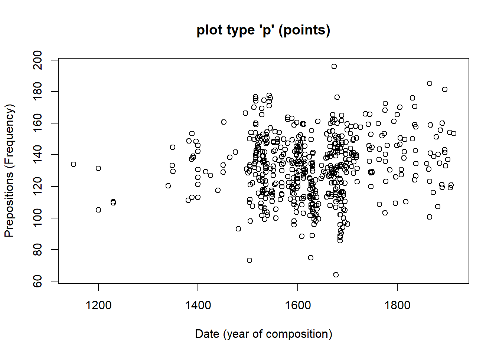
Let us go over the command. The first part of the call is
plot which is the function for plotting data in base R. In
the round brackets are the arguments in which we specify what the plot
should look like. The Prepositions ~ Date part tells R
which variables should be displayed and the type = "p" part
tells R which type of plot we want (p stands for points,
l for lines, b for both lines and points). The
part data = pdat tells R which data set to take the data
from, and ylab = "Prepositions (Frequency)" and
xlab = "Date (year of composition)" informs R about the
axes’ labels. The part main = "plot type 'p' (points)"
informs R about what we want as the main title of the plot.
In a next step, we will change the title, add two regression lines to the scatterplot (in the first case a linear and in the second case a smoothed regression line) and we will change the points as well as the color of the points.
# create simple scatter plot with regression lines (ablines)
plot(Prepositions ~ Date, # plot Prepositions by Date
type = "p", # plot type p (points)
data = pdat, # data from data set iris
ylab = "Prepositions (Frequency)", # add y-axis label
xlab = "Date (year of composition)", # add x-axis label
main = "Scatterplot", # add title
pch = 20, # use point symbol 20 (filled circles)
col = "lightgrey" # define symbol colour as light grey
) # end drawing plot
abline( # add regression line (y~x)
lm(pdat$Prepositions ~ pdat$Date), # draw regression line of linear model (lm)
col="red" # define line colour as red
) # end drawing line
lines( # add line (x,y)
lowess(pdat$Prepositions ~ pdat$Date), # draw smoothed lowess line (x,y)
col="blue" # define line colour as blue
) # end drawing line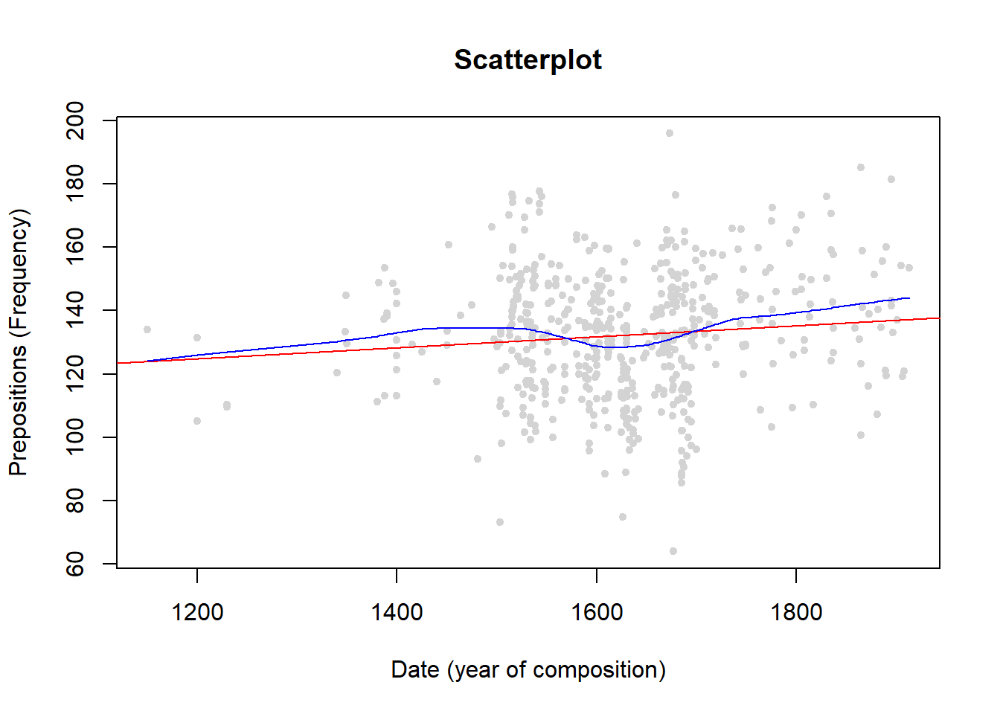
The only things that are different in the main call are the
pch argument with has changed the points into filled dots
(this is what the 20 stands for) and the col argument which
we have specified as lightgrey. The regression lines are
added using the abline and the lines
argument.
EXERCISE TIME!
`
- Load the data set called data03 and create a simple
scatterplot showing the
Variable1on the x-axis andVariable2on the y-axis.
Tipp: Use the code below to load the data.
data03 <- base::readRDS(url("https://slcladal.github.io/data/d03.rda", "rb"))Answer
# load data03
data03 <- read.delim("https://slcladal.github.io/data/data03.txt",
sep = "\t", header = T)
# create simple scatter plot
plot(Variable2 ~ Variable1,
type = "p",
data = data03,
ylab = "Variable1",
xlab = "Variable2",
main = "Scatterplot Exercise",
pch = 20,
col = "darkgrey"
)`
Scatter Plots in lattice
We now turn to data visualization in lattice. As the
lattice package is already loaded, we can create a first
simple scatter plot using the xyplot function form the
lattice package. The scatter plot shows the relative
frequency of prepositions by year of composition.
# create simple scatter plot
xyplot(Prepositions ~ Date,
# add y-axis label
ylab = "Prepositions (Frequency)",
# add x-axis label
xlab = "Date (year of composition)",
data = pdat) 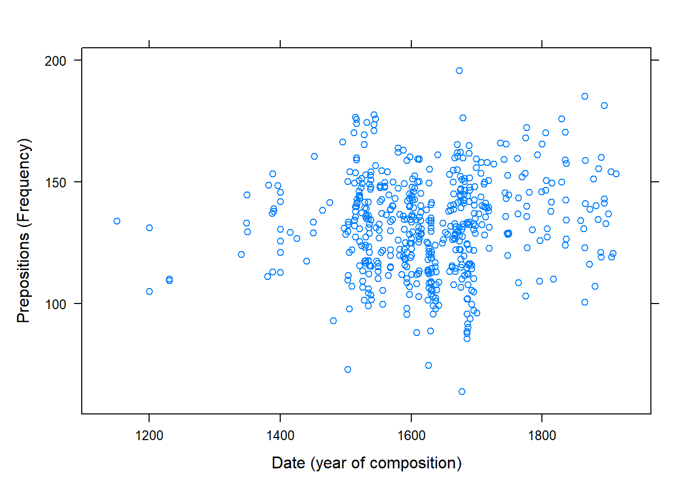
Since the lattice package was created to plot multiple
relationships with a single call, we will now make use of that feature
and plot multiple relationships at once. In addition, we will add a grid
to the plot to improve comparability of data points within the graph.
Thus, the scatter plot shows the relative frequency of prepositions by
year of composition and genre.
# create scatter plots by species
xyplot(Prepositions ~ Date | Genre,
# add y-axis label
ylab = "Prepositions (Frequency)",
# add y-axis label
xlab = "Date (year of composition)",
# add grids to panels
grid = TRUE,
data = pdat
) 
The only new code in the chunk above is the “| Genre” part. This part means that the relationship between Prepositions and Date should be displayed by Genre So, the |-symbol can be translated into “by”. The splitting of the plot into different panels for Genre is then done automatically.
Like in base, we can modify lattice-plots and specify, e.g. the symbols that are plotted or their color.
# create scatter plots by species
xyplot(Prepositions ~ Date | Genre,
ylab = "Prepositions (Frequency)",
xlab = "Date (year of composition)",
grid = TRUE,
# symbol type (20 = filled dots)
pch = 20,
# color of symbols
col = "black",
data = pdat
) 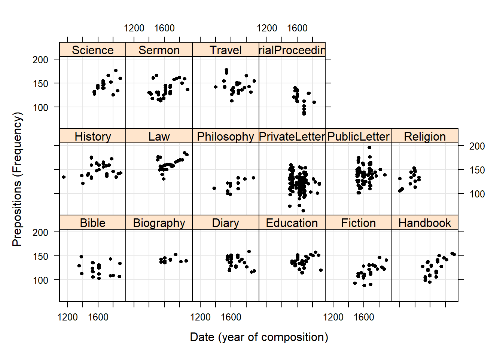
Next, we will use the ggplot2 package to create a
scatter plot.
Scatter Plots in ggplot2
We now turn to data visualization using ggplot. As the
ggplot2 package is already loaded, we create a very basic
scatterplot in ggplot2 using the geom_point
function to show the advantages of creating visualizations in this
environment.
# create simple scatter plot
# use data set "pdat"
ggplot(pdat,
# define axes
aes(x= Date,
y= Prepositions)) +
# define plot type
geom_point() 
Let’s go over the code above. The function call for plotting in “ggplot2” is simply “ggplot”. This function takes the data set as its first argument and then requires aesthetics. The aesthetics are defined within the “ggplot” function as the arguments of “aes”. The “aes” function takes the axes as the arguments (in the current case). Then, we need to define the type of plot that we want. As we want a scatter plot with points, we add the “geom_point()” function without any arguments (as we do not want to specify the size, colour, and shape of the points just yet).
The advantage of “ggplot2” is that is really easy to modify the plot by adding new layers and to change the basic outlook by modifying the theme which is what we will do in the code below.
ggplot(pdat,
# define axes
aes(x=Date,
y= Prepositions,
# define to color by Species
color = GenreRedux)) +
# define plot type
geom_point() +
# define theme as black and white (bw)
theme_bw() 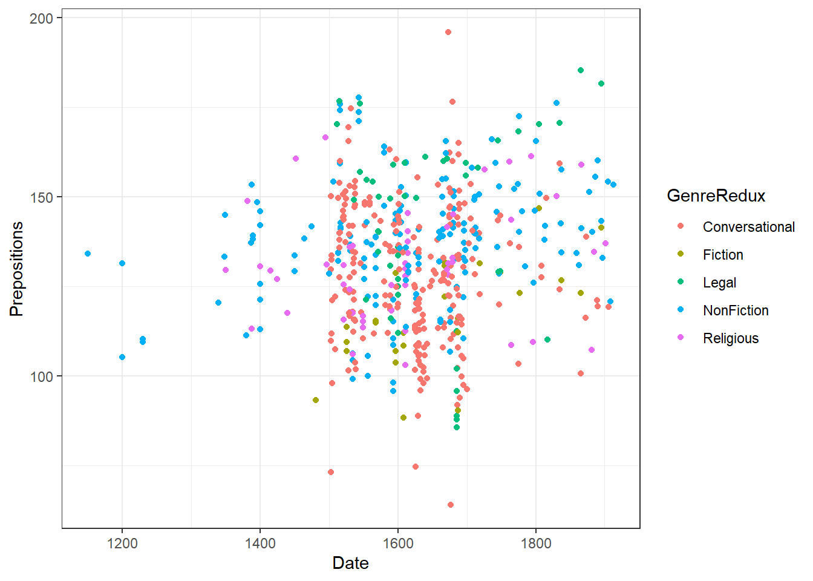
The white background is created by specifying the theme as a black
and white theme (theme_bw()) while the color of the dots is
changed by specifying that the color should be applied by Species
(color = GenreRedux). Then, the colors to be used are
defined in the function scale_color_manual.
We can now specify the symbols in the scatter plot.
# create scatter plot colored by genre
ggplot(pdat, aes(Date, Prepositions, color = GenreRedux, shape = GenreRedux)) +
geom_point() +
guides(shape=guide_legend(override.aes=list(fill=NA))) +
scale_shape_manual(name = "Genre",
breaks = names(table(pdat$GenreRedux)),
values = 1:5) +
scale_color_manual(name = "Genre",
breaks = names(table(pdat$GenreRedux)),
values = clrs5) +
theme_bw() +
theme(legend.position="top")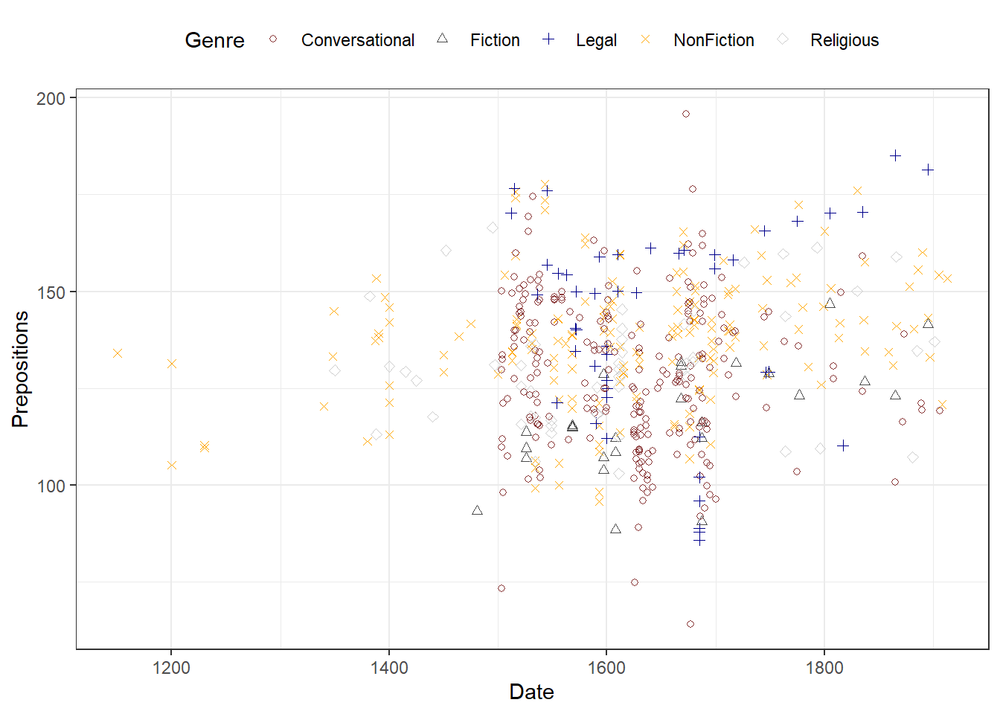
Extensions of dot plots
In addition, we can add regression lines with error bars by Species and, if we want to show separate windows for the plots, we can use the “facet_grid” or “facet_wrap” function and define by which variable we want to create different panels.
# create scatter plot colored by genre in different panels
ggplot(pdat, aes(Date, Prepositions, color = Genre)) +
facet_wrap(vars(Genre), ncol = 4) +
geom_point() +
geom_smooth(method = "lm", se = F) +
theme_bw() +
theme(legend.title = element_blank(),
axis.text.x = element_text(size=8, angle=90))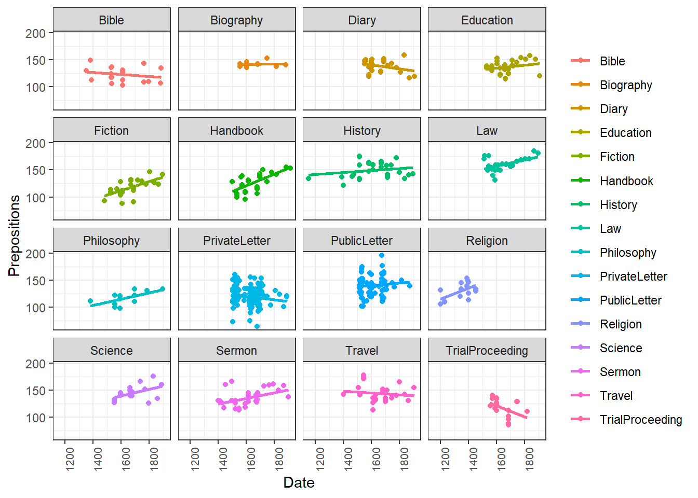
If we only want to show the lines, we simply drop the “geom_point” function.
# create scatter plot colored by genre in different panels
ggplot(pdat, aes(x=Date, y= Prepositions, color = Genre)) +
facet_wrap(vars(Genre), ncol = 4) +
geom_smooth(method = "lm", se = F) +
theme_bw() +
theme(legend.title = element_blank(),
axis.text.x = element_text(size=8, angle=90))
Another option is to plot density layers instead of plotting the data points.
# create scatter density plot
ggplot(pdat, aes(x=Date, y= Prepositions, color = GenreRedux)) +
facet_wrap(vars(GenreRedux), ncol = 5) +
theme_bw() +
geom_density_2d() +
theme(legend.position = "top",
legend.title = element_blank(),
axis.text.x = element_text(size=8, angle=90))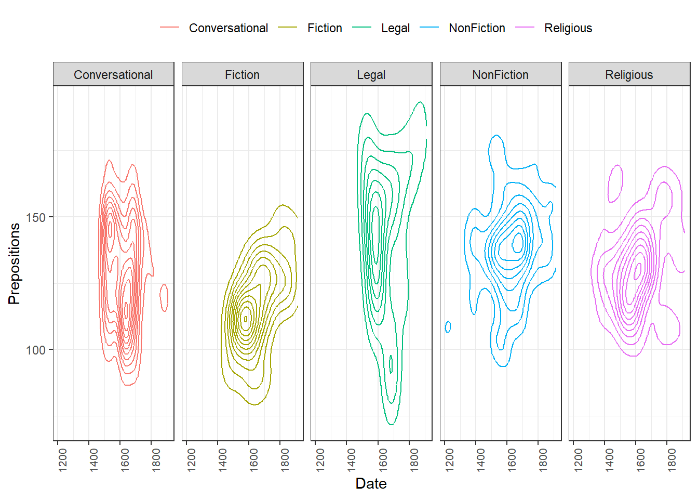
Although these are not scatterplots, plots with dot-symbols are very flexible and can be extended to show properties of the distribution of values. One way to create such a plot is to plot means as dot-symbols and add error bars to provide information about the underlying distribution. The plot below illustrates such a plot and additionally shows how plots can be further customized.
# scatter plot with error bars
ggplot(pdat, aes(x=reorder(Genre, Prepositions, mean), y= Prepositions, group = Genre)) +
stat_summary(fun = mean, geom = "point", aes(group= Genre)) +
stat_summary(fun.data = mean_cl_boot,
# add error bars
geom = "errorbar", width = 0.2) +
# def. y-axis range
coord_cartesian(ylim = c(100, 200)) +
# def. font size
theme_bw(base_size = 15) +
# def. x- and y-axis
theme(axis.text.x = element_text(size=10, angle = 90),
axis.text.y = element_text(size=10, face="plain")) +
# def. axes labels
labs(x = "Genre", y = "Prepositions (Frequency)") +
# def. to col.
scale_color_manual(guide = FALSE) 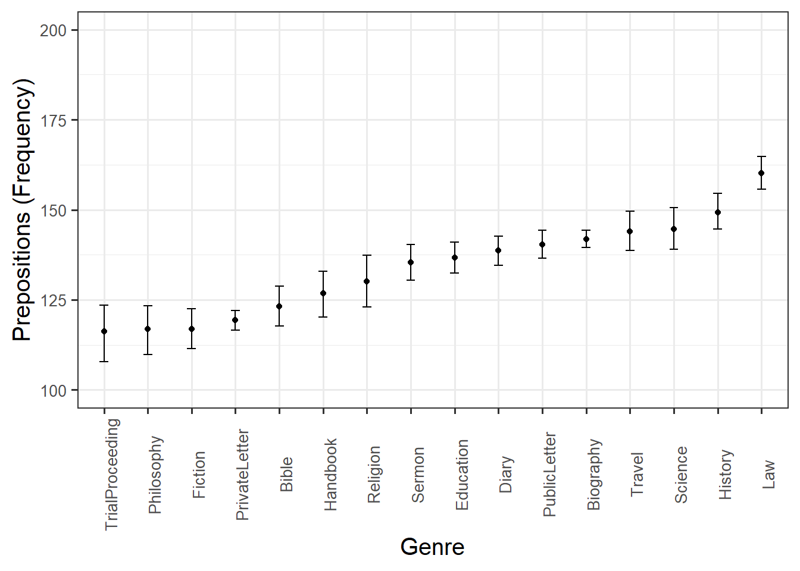
Balloon plots are an extension of scatter plots that are typically used to display data that represents * two categorical variables * one numeric variable.
# ballon plot
pdat %>%
dplyr::mutate(DateRedux = factor(DateRedux)) %>%
dplyr::group_by(DateRedux, GenreRedux) %>%
dplyr::summarise(Prepositions = mean(Prepositions)) %>%
ggplot(aes(DateRedux, 100,
size = Prepositions,
fill = GenreRedux)) +
facet_grid(vars(GenreRedux)) +
geom_point(shape = 21) +
scale_size_area(max_size = 15) +
coord_cartesian(ylim = c(50, 150)) +
theme_bw() +
theme(axis.title.y=element_blank(),
axis.text.y=element_blank(),
axis.ticks.y=element_blank()) +
scale_fill_discrete(guide = "none")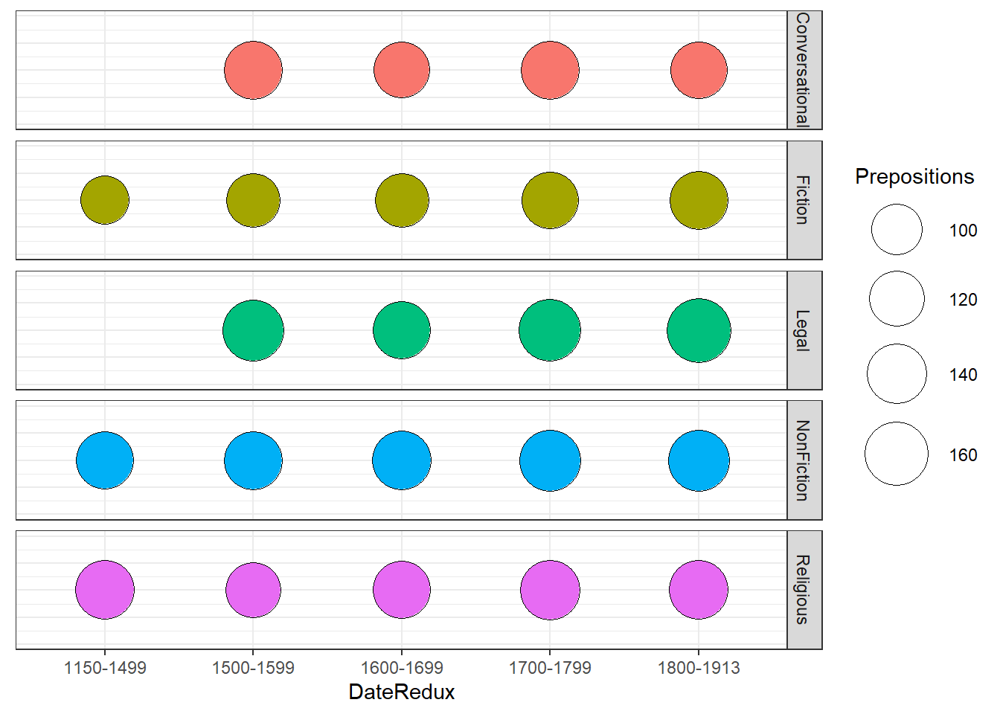
Density Plots
Another way to visualize the distribution of the data with respect to numeric variables are density plots or Kernel Density Plots. Density plots smooth the data using so-called kernel smoothing to even out the distribution of frequencies along the lines of a numeric or interval variable. The peaks of density plots help display where values are concentrated over the interval. To show the relationship between the variable and the density plot, we will first create a scatter plot and then create a density plot of the variable displayed on the x-axis of the scatter plot.
# create dot plot
ggplot(pdat, aes(x = Date, y = Prepositions, color=Region)) +
geom_point() +
scale_color_manual(values = clrs2) +
theme(legend.position=c(0,1), legend.justification=c(0,1)) 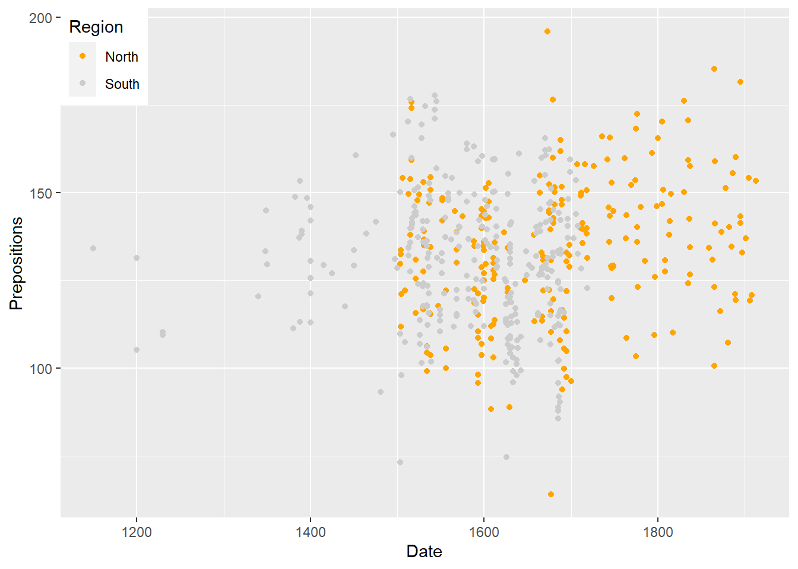
We will now create a marginal density plot of Date (x-axis) to show when texts from the north and south were particularly common.
# create dot plot
ggplot(pdat, aes(Date, fill=Region)) +
geom_density(alpha=.5) +
scale_fill_manual(values = clrs2) +
theme(legend.position=c(0,1), legend.justification=c(0,1)) 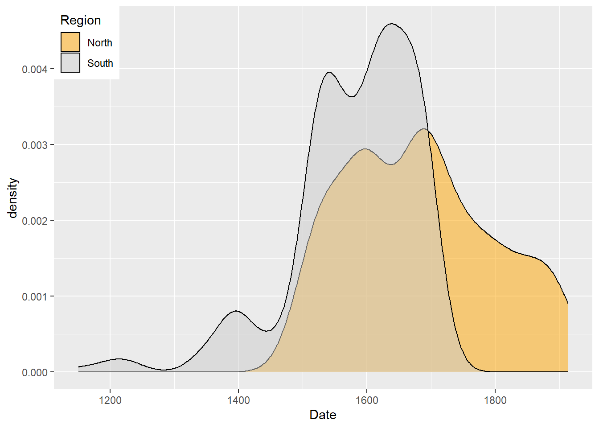
The density plot shows that the texts differ substantially with respect to where they were written as the distribution of texts written in southern Britain continues way into the 19th century while we only have texts written in north until about 1800.
# create dot plot
ggplot(pdat, aes(Date, Prepositions)) +
geom_density2d_filled()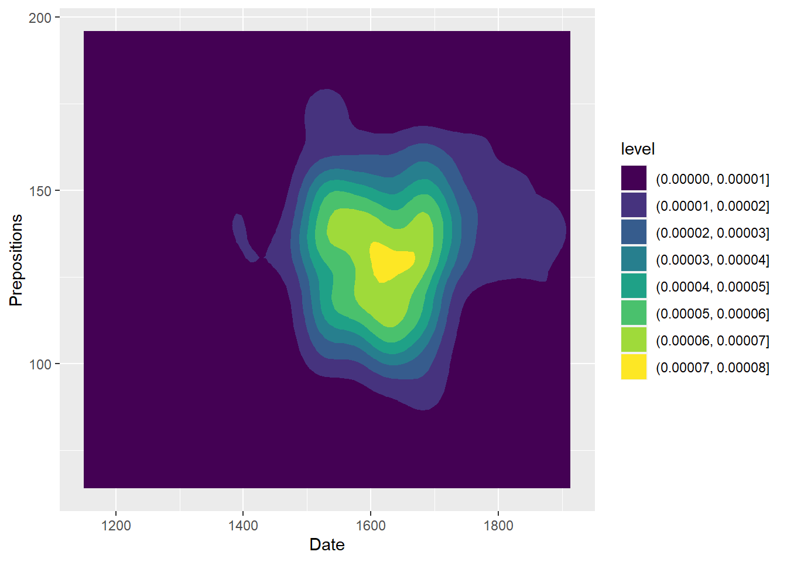
An alternative method for displaying densities is by using a hex plot as shown below. Hex plots divide the plotting area into hexagons and display density as hue of the hexagons.
# create dot plot
pdat %>%
ggplot(aes(x = Date, y = Prepositions)) +
geom_hex()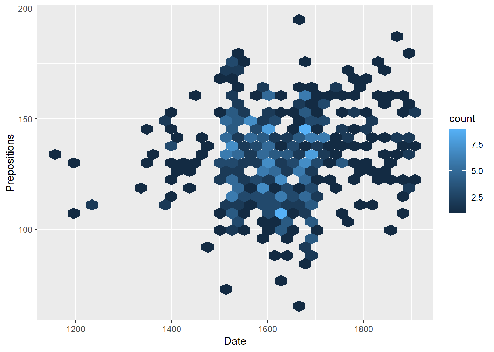
We are now in a position to start creating line graphs with ggplot.
Line Graphs
Line graphs are used when we have numeric values that are linked (in one way or another) because they come from the same speaker or genre as in our case).
pdat %>%
dplyr::group_by(DateRedux, GenreRedux) %>%
dplyr::summarise(Frequency = mean(Prepositions)) %>%
ggplot(aes(x=DateRedux, y= Frequency, group= GenreRedux, color = GenreRedux)) +
# add geom layer with lines
geom_line()
Smoothed line graphs
Another very useful function when creating line graphs with “ggplot” is “geom_smooth” which smoothes the lines to be drawn.
ggplot(pdat, aes(x=DateRedux, y= Prepositions, group= GenreRedux, color = GenreRedux)) +
# add geom layer with lines
geom_smooth()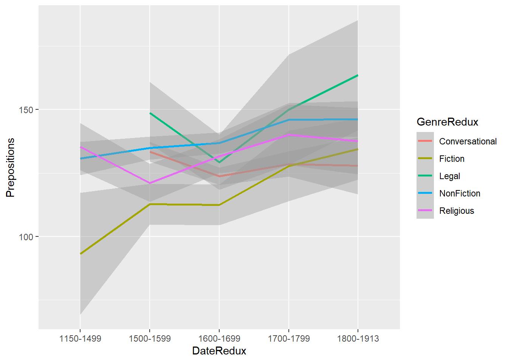
As this smoothed line graph is extremely useful, we will customize it to show how to modify your graph.
# define aesthetics
ggplot(pdat, aes(x=Date, y= Prepositions, color = GenreRedux, linetype = GenreRedux)) +
# add geom layer with lines
geom_smooth(se = F) +
# legend without background color
guides(color=guide_legend(override.aes=list(fill=NA))) +
# def. legend position
theme(legend.position="top") +
# def. linetype
scale_linetype_manual(values=c("twodash", "dashed", "dotdash", "dotted", "solid"),
# def. legend header
name=c("Genre"),
# def. linetypes
breaks = names(table(pdat$GenreRedux)),
# def. labels
labels = names(table(pdat$GenreRedux))) +
# def. col.
scale_colour_manual(values=clrs5,
# define legend header
name=c("Genre"),
# define elements
breaks=names(table(pdat$GenreRedux)),
# define labels
labels = names(table(pdat$GenreRedux))) +
# add x-axis label
labs(x = "Year") +
# customize x-axis tick positions
scale_x_continuous(breaks=seq(1100, 1900, 100),
# add labels to x-axis tick pos.
labels=seq(1100, 1900, 100)) +
# add y-axis label
scale_y_continuous(name="Relative frequency \n(per 1,000 words)",
# customize tick y-axis
limits=c(100, 200)) +
# define theme as black and white
theme_bw(base_size = 10) 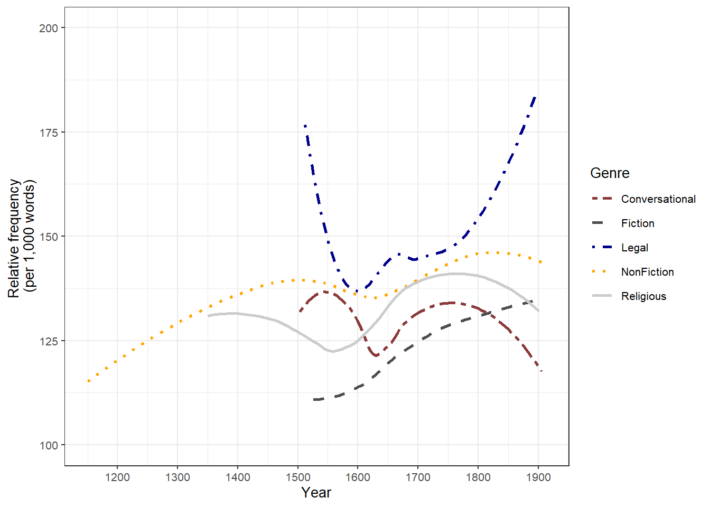
Although the code for the customized smoothed line graph is much longer and requires addition specifications, it is a very nice way to portrait the development over time.
Ribbon plots
Ribbon plots show an area, typically between minimum and maximum values. In addition, ribbon plots commonly also show the mean as depicted below.
# create dot plot
pdat %>%
dplyr::mutate(DateRedux = as.numeric(DateRedux)) %>%
dplyr::group_by(DateRedux) %>%
dplyr::summarise(Mean = mean(Prepositions),
Min = min(Prepositions),
Max = max(Prepositions)) %>%
ggplot(aes(x = DateRedux, y = Mean)) +
geom_ribbon(aes(ymin = Min, ymax = Max), fill = "gray80") +
geom_line() +
scale_x_continuous(labels = names(table(pdat$DateRedux)))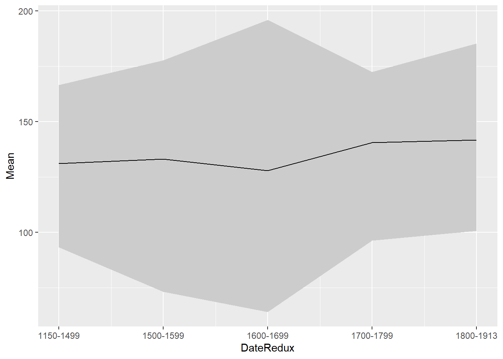
Line graphs for Likert data
A special case of line graphs is used when dealing with Likert-scaled variables. In such cases, the line graph displays the density of cumulative frequencies of responses. The difference between the cumulative frequencies of responses displays differences in preferences. We will only focus on how to create such graphs using the “ggplot” environment here as it has an inbuilt function (“ecdf”) which is designed to handle such data.
In a first step, we create a data set which consists of a Likert-scaled variable. The fictitious data created here consists of rating of students from three courses about how satisfied they were with their language-learning course. The response to the Likert item is numeric so that “strongly disagree/very dissatisfied” would get the lowest and “strongly agree/very satisfied” the highest numeric value.
ldat <- base::readRDS(url("https://slcladal.github.io/data/lid.rda", "rb"))Let’s briefly inspect the data.
Course | Satisfaction |
Chinese | 1 |
Chinese | 1 |
Chinese | 1 |
Chinese | 1 |
Chinese | 1 |
Chinese | 1 |
Chinese | 1 |
Chinese | 1 |
Chinese | 1 |
Chinese | 1 |
Chinese | 1 |
Chinese | 1 |
Chinese | 1 |
Chinese | 1 |
Chinese | 1 |
Now that we have data resembling a Likert-scaled item from a questionnaire, we will display the data in a cumulative line graph.
# create cumulative density plot
ggplot(ldat,aes(x = Satisfaction, color = Course)) +
geom_step(aes(y = ..y..), stat = "ecdf") +
labs(y = "Cumulative Density") +
scale_x_discrete(limits = 1:5, breaks = 1:5,
labels=c("very dissatisfied", "dissatisfied", "neutral", "satisfied", "very satisfied")) +
scale_colour_manual(values = clrs3) 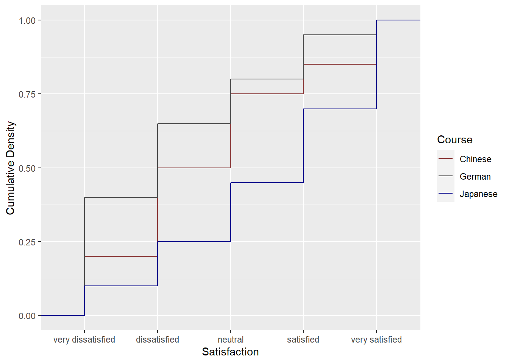
The satisfaction of the German course was the lowest as the red line shows the highest density (frequency of responses) of “very dissatisfied” and “dissatisfied” ratings. The students in our fictitious data set were most satisfied with the Chinese course as the blue line is the lowest for “very dissatisfied” and “dissatisfied” ratings while the difference between the courses shrinks for “satisfied” and “very satisfied”. The Japanese language course is in-between the German and the Chinese course.
Pie charts
Most commonly, the data for visualization comes from tables of absolute frequencies associated with a categorical or nominal variable. The default way to visualize such frequency tables are pie charts and bar plots.
In a first step, we modify the original data to get counts and percentages. The data represents the number of documents per time period and the percentage of those documents across all time periods.
# create bar plot data
bdat <- pdat %>%
dplyr::mutate(DateRedux = factor(DateRedux)) %>%
group_by(DateRedux) %>%
dplyr::summarise(Frequency = n()) %>%
dplyr::mutate(Percent = round(Frequency/sum(Frequency)*100, 1))Let’s briefly inspect the data.
DateRedux | Frequency | Percent |
1150-1499 | 34 | 6.3 |
1500-1599 | 180 | 33.5 |
1600-1699 | 225 | 41.9 |
1700-1799 | 53 | 9.9 |
1800-1913 | 45 | 8.4 |
Before creating bar plots, we will briefly turn to pie charts because
pie charts are very common despite suffering from certain shortcomings.
Consider the following example which highlights some of the issues that
arise when using pie charts. In base R, we create pie charts using the
pie function as shown below.
pie(bdat$Percent,
col = clrs5,
labels = bdat$Percent)
legend("topright", names(table(bdat$DateRedux)),
fill = clrs5)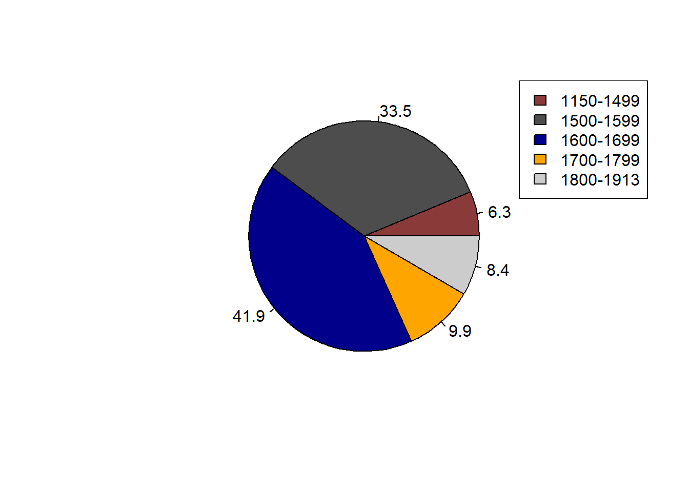
In ggplot, we create pie charts by using the geom_bar
and then define `coord_polar(“y”, start=0). In contrast to base R, the
labeling is not as easy as in base R. We will thus start with a pie
chart without labels and then add the labels in a next step.
ggplot(bdat, aes("", Percent, fill = DateRedux)) +
geom_bar(stat="identity", width=1, color = "white") +
coord_polar("y", start=0) +
scale_fill_manual(values = clrs5) +
theme_void()If the slices of the pie chart are not labelled, it is difficult to see which slices are smaller or bigger compared to other slices. This problem can easily be avoided when using a bar plot instead.
The labelling of pie charts is, however, somewhat tedious as the positioning is tricky. Below is an example for adding labels without specification.
# create pie chart
ggplot(bdat, aes("", Percent, fill = DateRedux)) +
geom_bar(stat="identity", width=1, color = "white") +
coord_polar("y", start=0) +
scale_fill_manual(values = clrs5) +
theme_void() +
geom_text(aes(y = Percent, label = Percent), color = "white", size=6)To place the labels where they make sense, we will add another variable to the data called “Position”.
piedata <- bdat %>%
dplyr::arrange(desc(DateRedux)) %>%
dplyr::mutate(Position = cumsum(Percent)- 0.5*Percent)Let’s briefly inspect the data.
DateRedux | Frequency | Percent | Position |
1800-1913 | 45 | 8.4 | 4.20 |
1700-1799 | 53 | 9.9 | 13.35 |
1600-1699 | 225 | 41.9 | 39.25 |
1500-1599 | 180 | 33.5 | 76.95 |
1150-1499 | 34 | 6.3 | 96.85 |
Now that we have specified the position, we can include it into the pie chart.
# create pie chart
ggplot(piedata, aes("", Percent, fill = DateRedux)) +
geom_bar(stat="identity", width=1, color = "white") +
coord_polar("y", start=0) +
scale_fill_manual(values = clrs5) +
theme_void() +
geom_text(aes(y = Position, label = Percent), color = "white", size=6)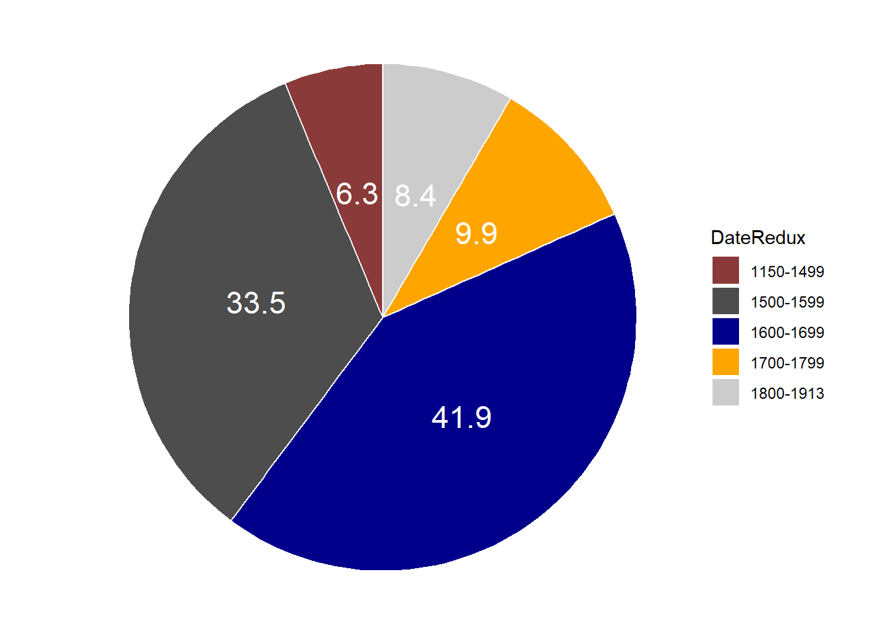
Histograms
Histograms summarize numeric variables by showing their distribution across bins.
Histograms in base R
To create histograms in base R, we simply use the hist
function and add the variable that we want to summarize as its
argument.
hist(pdat$Prepositions,
xlab = "Prepositions (per 1,000 words)",
main = "")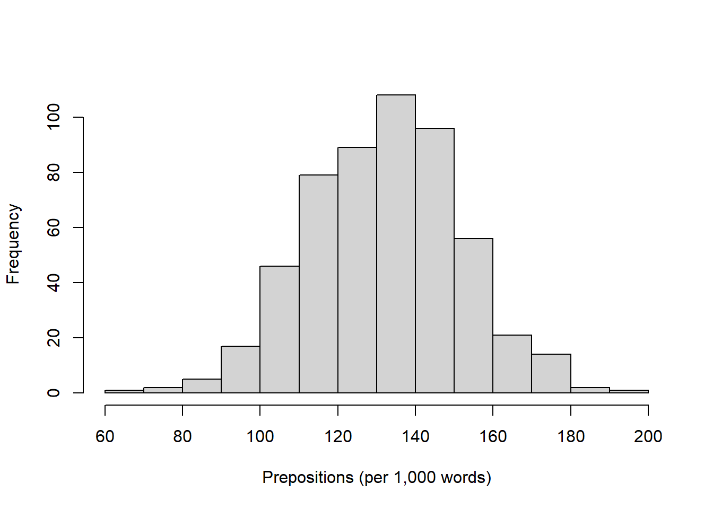
Histograms in ggplot
Using ggplot, we specify the variable we want to
summarize in the aesthetics and use the geom_histogram
function to generate a histogram.
ggplot(pdat, aes(Prepositions)) +
geom_histogram()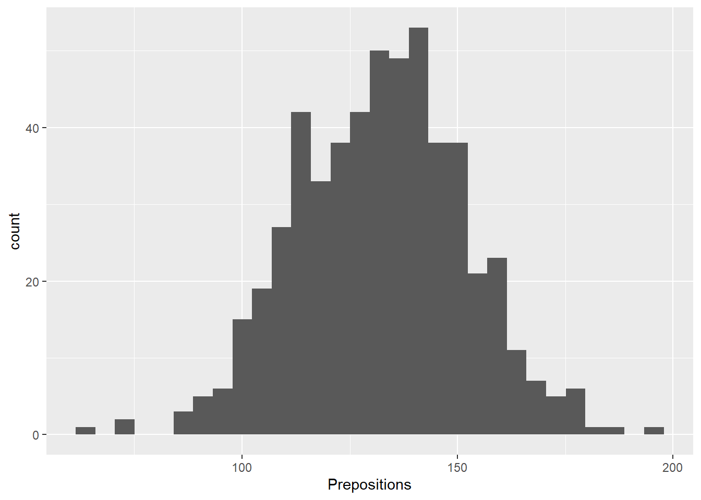
We can simply add information about a second variable by specifying
this variable as the basis for the coloring of the bars (which we do by
specify the fill argument).
ggplot(pdat, aes(Prepositions, fill = Region)) +
geom_histogram()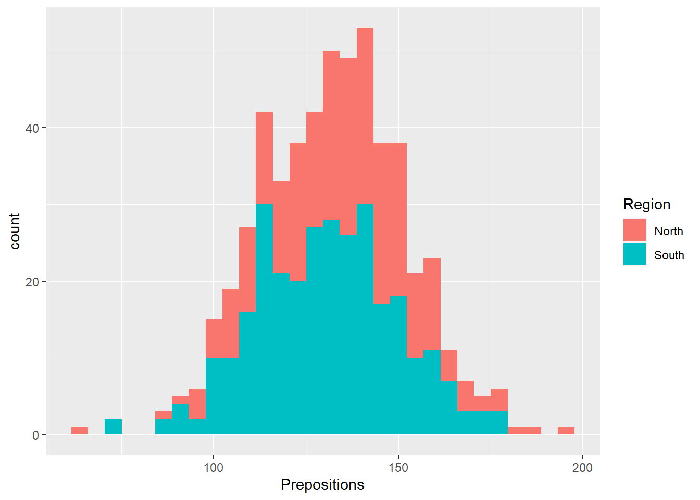
Bar plots
Like pie charts, bar plot display frequency information across categorical variable levels.
Bar plots in base R
In base R, we use the barplot function to create
barplots. The barplot function is very flexible but takes a
table with frequency counts as its main argument. We can also specify
axes labels, a title, the color of the bras, and the axes limits. We
specify text, grids, and boxes separately after the barplot
function call.
# create simple scatter plot
barplot(table(pdat$DateRedux), # plot Texts by DateRedux
ylab = "Texts (Frequency)", # add y-axis label
xlab = "Period of composition", # add x-axis label
main = "bar plot in base R", # add title
col = clrs5, # add colors
ylim = c(0, 250) # define y-axis limits
) # end drawing plot
grid() # add grid
text(seq(0.7, 5.5, 1.2), # add label positions (x-axis)
table(pdat$DateRedux)+10, # add label positions (y-axis)
table(pdat$DateRedux)) # add labels
box() # add box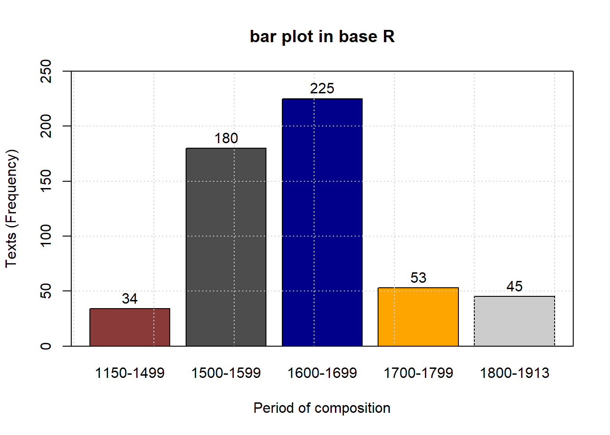
To create grouped bar plots, we tabulate the variables that we are interested in. In the this example, we group by Region as shown below.
# create simple scatter plot
barplot(table(pdat$DateRedux, pdat$Region), # plot Texts by DateRedux
beside = T, # bars beside each other
ylab = "Texts (Frequency)", # add y-axis label
xlab = "Period of composition", # add x-axis label
main = "grouped bar plot in base R", # add title
col = clrs5, # add colors
ylim = c(0, 250) # define y-axis limits
) # end drawing plot
grid() # add grid
text(c(seq(1.5, 5.5, 1.0), seq(7.5, 11.5, 1.0)), # add label positions (x-axis)
table(pdat$DateRedux, pdat$Region)+10, # add label positions (y-axis)
table(pdat$DateRedux, pdat$Region)) # add labels
legend("topleft", names(table(pdat$DateRedux)), # add legend
fill = clrs5) # add colors
box() # add box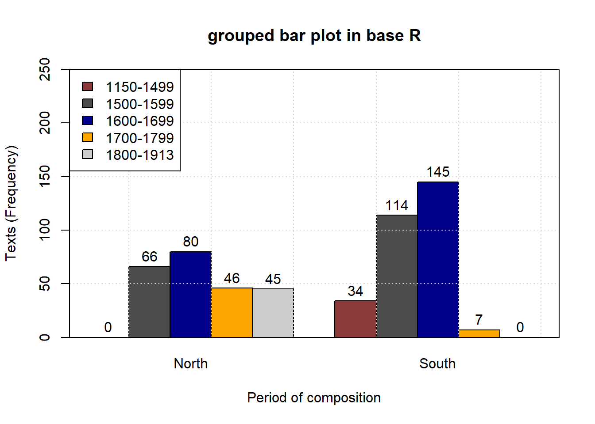
To transpose the plot, i.e. showing the Frequencies on the x- rather
than the y-axis, we set the argument horiz to
TRUE.
# create simple scatter plot
barplot(table(pdat$DateRedux), # plot Texts by DateRedux
ylab = "Texts (Frequency)", # add y-axis label
xlab = "Period of composition", # add x-axis label
col = clrs5, # add colors
horiz = T, # horizontal bars
xlim = c(0, 250), # define x-axis limits
las = 2, # change direction of axis labels
cex.names = .5) # reduce font of axis labels
box() # add box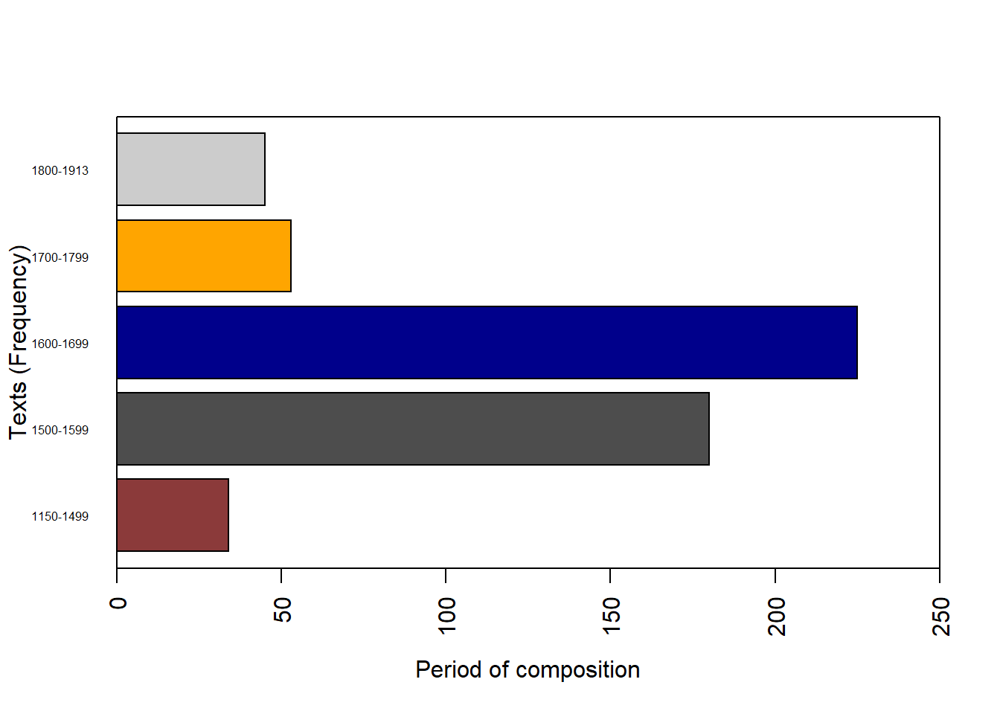
Bar plots in ggplot
The creation of barplots in ggplot works just like other types of
visualizations in this framework. We first define the data and the
aesthetics and then use the geom_bar to create a
barplot.
# bar plot
ggplot(bdat, aes(DateRedux, Percent, fill = DateRedux)) +
geom_bar(stat="identity") + # determine type of plot
theme_bw() + # use black & white theme
# add and define text
geom_text(aes(y = Percent-5, label = Percent), color = "white", size=3) +
# add colors
scale_fill_manual(values = clrs5) +
# suppress legend
theme(legend.position="none")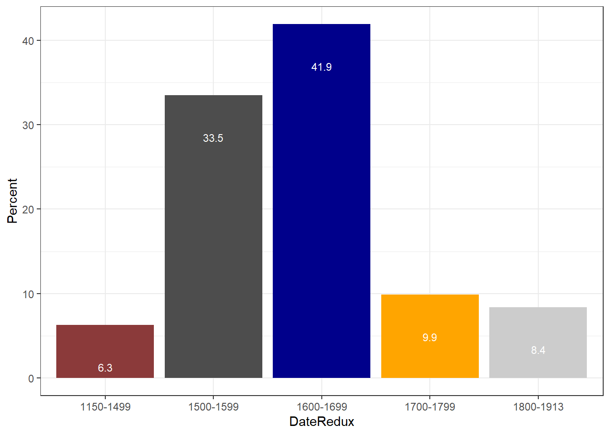
Compared with the pie chart, it is much easier to grasp the relative size and order of the percentage values which shows that pie charts are unfit to show relationships between elements in a graph and, as a general rule of thumb, should be avoided.
Bar plot can be grouped to add another layer of information which is
particularly useful when dealing with frequency counts across multiple
categorical variables. To create grouped bar plots, we plot
Region while including DateRedux as the
fill argument. Also, we use the command
position=position_dodge().
# bar plot
ggplot(pdat, aes(Region, fill = DateRedux)) +
geom_bar(position = position_dodge(), stat = "count") +
theme_bw() +
scale_fill_manual(values = clrs5)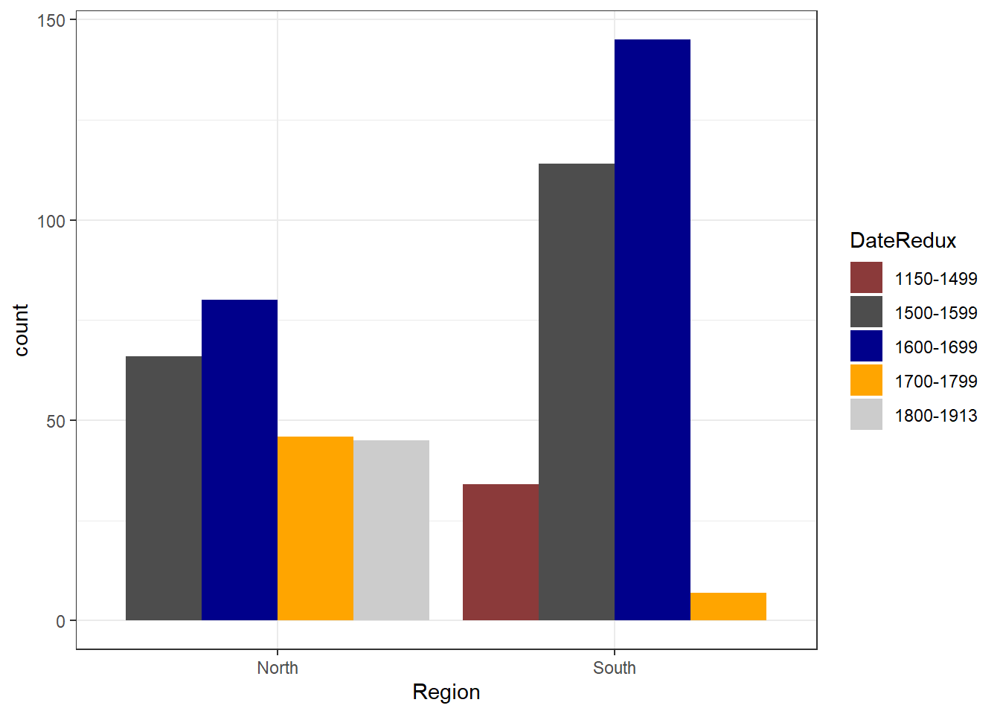 If we
leave out the position=position_dodge() argument, we get a
stacked bar plot as shown below.
# bar plot
ggplot(pdat, aes(DateRedux, fill = GenreRedux)) +
geom_bar(stat="count") +
theme_bw() +
scale_fill_manual(values = clrs5) 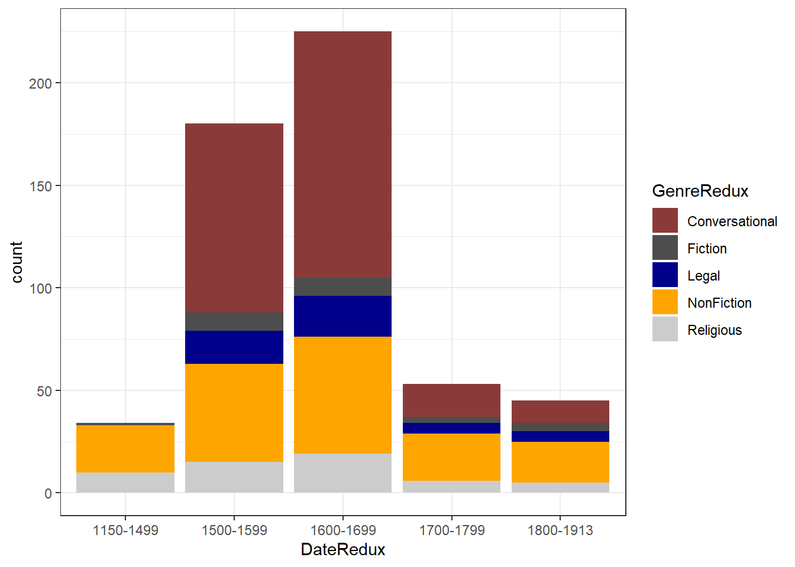
One issue to consider when using stacked bar plots is the number of variable levels: when dealing with many variable levels, stacked bar plots tend to become rather confusing. This can be solved by either collapsing infrequent variable levels or choose a colour palette that reflects some other inherent piece of information such as formality (e.g. blue) versus informality (e.g. red).
Stacked bar plots can also be normalized so that changes in
percentages become visible. This is done by exchanging
position=position_dodge() with
position="fill".
# bar plot
ggplot(pdat, aes(DateRedux, fill = GenreRedux)) +
geom_bar(stat="count", position="fill") +
theme_bw() +
scale_fill_manual(values = clrs5) +
labs(y = "Probability")
Bar plots for Likert data
Bar plots are particularly useful when visualizing data obtained through Likert items. As this is a very common issue that empirical researchers face. There are two basic ways to display Likert items using bar plots: grouped bar plots and more elaborate scaled bar plots.
Although we have seen above how to create grouped bar plots, we will repeat it here with the language course example used above when we used cumulative density line graphs to visualise how to display Likert data.
In a first step, we recreate the data set which we have used above. The data set consists of a Likert-scaled variable (Satisfaction) which represents rating of students from three courses about how satisfied they were with their language-learning course. The response to the Likert item is numeric so that “strongly disagree/very dissatisfied” would get the lowest and “strongly agree/very satisfied” the highest numeric value.
# create likert data
nlik <- ldat %>%
dplyr::group_by(Course, Satisfaction) %>%
dplyr::summarize(Frequency = n())
# inspect data
head(nlik)## # A tibble: 6 × 3
## # Groups: Course [2]
## Course Satisfaction Frequency
## <chr> <int> <int>
## 1 Chinese 1 20
## 2 Chinese 2 30
## 3 Chinese 3 25
## 4 Chinese 4 10
## 5 Chinese 5 15
## 6 German 1 40Now that we have data resembling a Likert-scaled item from a questionnaire, we will display the data in a cumulative line graph.
# create grouped bar plot
ggplot(nlik, aes(Satisfaction, Frequency, fill = Course)) +
geom_bar(stat="identity", position=position_dodge()) +
# define colors
scale_fill_manual(values=clrs5) +
# add text and define colour
geom_text(aes(label=Frequency), vjust=1.6, color="white",
# define text position and size
position = position_dodge(0.9), size=3.5) +
scale_x_discrete(limits=c("1","2","3","4","5"), breaks=c(1,2,3,4,5),
labels=c("very dissatisfied", "dissatisfied", "neutral", "satisfied",
"very satisfied")) +
theme_bw()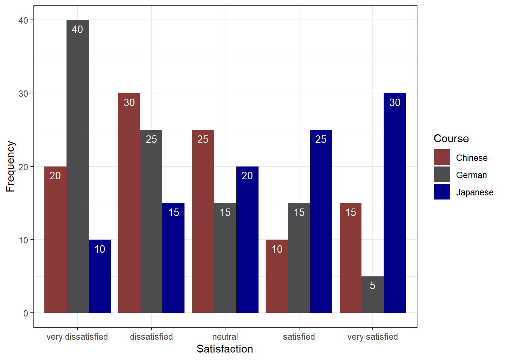
Another and very interesting way to display such data is by using the Likert package. In a first step, we need to activate the package, clean the data, and extract a subset for the data visualization example.
sdat <- base::readRDS(url("https://slcladal.github.io/data/sdd.rda", "rb"))Group | Respondent | How.did.you.like.the.course. | How.did.you.like.the.teacher. | Was.the.content.intersting. | Was.the.content.adequate.for.the.course. | Were.there.enough.discussions. | Was.the.use.of.online.materials.appropriate. | Was.the.teacher.appropriately.prepared. | Was.the.workload.of.the.course.appropriate. | Was.the.course.content.enganging. | Were.there.enough.interactive.exerceises.included.in.the.sessions. |
German | G1 | 4 | 4 | 4 | 4 | 4 | 4 | 4 | 4 | 4 | 4 |
German | G2 | 4 | 5 | 3 | 4 | 4 | 4 | 5 | 3 | 1 | 3 |
German | G3 | 5 | 3 | 4 | 2 | 4 | 3 | 4 | 4 | 3 | 1 |
German | G4 | 3 | 3 | 3 | 3 | 3 | 3 | 3 | 3 | 3 | 3 |
German | G5 | 1 | 1 | 1 | 1 | 1 | 1 | 1 | 1 | 1 | 1 |
German | G6 | 3 | 1 | 3 | 2 | 3 | 3 | 3 | 3 | 3 | 3 |
German | G7 | 5 | 3 | 4 | 2 | 4 | 3 | 3 | 4 | 4 | 5 |
German | G8 | 5 | 5 | 5 | 5 | 5 | 5 | 5 | 5 | 5 | 5 |
German | G9 | 5 | 1 | 3 | 3 | 4 | 4 | 5 | 5 | 3 | 1 |
German | G10 | 3 | 3 | 3 | 3 | 3 | 3 | 3 | 3 | 3 | 3 |
German | G11 | 4 | 2 | 4 | 1 | 4 | 4 | 4 | 5 | 1 | 1 |
German | G12 | 3 | 3 | 3 | 3 | 3 | 3 | 3 | 3 | 3 | 3 |
German | G13 | 5 | 5 | 5 | 5 | 5 | 5 | 5 | 5 | 5 | 5 |
German | G14 | 3 | 5 | 3 | 3 | 4 | 3 | 3 | 4 | 2 | 4 |
German | G15 | 4 | 2 | 3 | 1 | 4 | 4 | 4 | 3 | 2 | 2 |
As you can see, we need to clean and adapt the column names. To do this, we will
- add an identifier which shows which question we are dealing with (e.g. Q 1: question text)
- remove the dots between words with spaces
- add a question mark at the end of questions
- remove superfluous white spaces
# clean column names
colnames(sdat)[3:ncol(sdat)] <- paste0("Q ", str_pad(1:10, 2, "left", "0"), ": ", colnames(sdat)[3:ncol(sdat)]) %>%
stringr::str_replace_all("\\.", " ") %>%
stringr::str_squish() %>%
stringr::str_replace_all("$", "?")
# inspect column names
colnames(sdat)## [1] "Group"
## [2] "Respondent"
## [3] "Q 01: How did you like the course?"
## [4] "Q 02: How did you like the teacher?"
## [5] "Q 03: Was the content intersting?"
## [6] "Q 04: Was the content adequate for the course?"
## [7] "Q 05: Were there enough discussions?"
## [8] "Q 06: Was the use of online materials appropriate?"
## [9] "Q 07: Was the teacher appropriately prepared?"
## [10] "Q 08: Was the workload of the course appropriate?"
## [11] "Q 09: Was the course content enganging?"
## [12] "Q 10: Were there enough interactive exerceises included in the sessions?"Now, that we have nice column names, we will replace the numeric values (1 to 5) with labels ranging from disagree to agree and convert our data into a data frame.
lbs <- c("disagree", "somewhat disagree", "neither agree nor disagree", "somewhat agree", "agree")
survey <- sdat %>%
dplyr::mutate_if(is.character, factor) %>%
dplyr::mutate_if(is.numeric, factor, levels = 1:5, labels = lbs) %>%
drop_na() %>%
as.data.frame()Group | Respondent | Q 01: How did you like the course? | Q 02: How did you like the teacher? | Q 03: Was the content intersting? | Q 04: Was the content adequate for the course? | Q 05: Were there enough discussions? | Q 06: Was the use of online materials appropriate? | Q 07: Was the teacher appropriately prepared? | Q 08: Was the workload of the course appropriate? | Q 09: Was the course content enganging? | Q 10: Were there enough interactive exerceises included in the sessions? |
German | G1 | somewhat agree | somewhat agree | somewhat agree | somewhat agree | somewhat agree | somewhat agree | somewhat agree | somewhat agree | somewhat agree | somewhat agree |
German | G2 | somewhat agree | agree | neither agree nor disagree | somewhat agree | somewhat agree | somewhat agree | agree | neither agree nor disagree | disagree | neither agree nor disagree |
German | G3 | agree | neither agree nor disagree | somewhat agree | somewhat disagree | somewhat agree | neither agree nor disagree | somewhat agree | somewhat agree | neither agree nor disagree | disagree |
German | G4 | neither agree nor disagree | neither agree nor disagree | neither agree nor disagree | neither agree nor disagree | neither agree nor disagree | neither agree nor disagree | neither agree nor disagree | neither agree nor disagree | neither agree nor disagree | neither agree nor disagree |
German | G5 | disagree | disagree | disagree | disagree | disagree | disagree | disagree | disagree | disagree | disagree |
German | G6 | neither agree nor disagree | disagree | neither agree nor disagree | somewhat disagree | neither agree nor disagree | neither agree nor disagree | neither agree nor disagree | neither agree nor disagree | neither agree nor disagree | neither agree nor disagree |
German | G7 | agree | neither agree nor disagree | somewhat agree | somewhat disagree | somewhat agree | neither agree nor disagree | neither agree nor disagree | somewhat agree | somewhat agree | agree |
German | G8 | agree | agree | agree | agree | agree | agree | agree | agree | agree | agree |
German | G9 | agree | disagree | neither agree nor disagree | neither agree nor disagree | somewhat agree | somewhat agree | agree | agree | neither agree nor disagree | disagree |
German | G10 | neither agree nor disagree | neither agree nor disagree | neither agree nor disagree | neither agree nor disagree | neither agree nor disagree | neither agree nor disagree | neither agree nor disagree | neither agree nor disagree | neither agree nor disagree | neither agree nor disagree |
German | G11 | somewhat agree | somewhat disagree | somewhat agree | disagree | somewhat agree | somewhat agree | somewhat agree | agree | disagree | disagree |
German | G12 | neither agree nor disagree | neither agree nor disagree | neither agree nor disagree | neither agree nor disagree | neither agree nor disagree | neither agree nor disagree | neither agree nor disagree | neither agree nor disagree | neither agree nor disagree | neither agree nor disagree |
German | G13 | agree | agree | agree | agree | agree | agree | agree | agree | agree | agree |
German | G14 | neither agree nor disagree | agree | neither agree nor disagree | neither agree nor disagree | somewhat agree | neither agree nor disagree | neither agree nor disagree | somewhat agree | somewhat disagree | somewhat agree |
German | G15 | somewhat agree | somewhat disagree | neither agree nor disagree | disagree | somewhat agree | somewhat agree | somewhat agree | neither agree nor disagree | somewhat disagree | somewhat disagree |
Now, we can use the plot and the likert
function to visualize the survey data.
# load package
library(likert)
# generate plot
plot(likert(survey[,3:12]), ordered = F, wrap= 60)
To save this plot, you can use the save_plot function
from the cowplot package as shown below.
survey_p1 <- plot(likert(survey[,3:12]), ordered = F, wrap= 60)
# save plot
cowplot::save_plot(here("images", "stu_p1.png"), # where to save the plot
survey_p1, # object to plot
base_asp = 1.5, # ratio of space fro questions vs space for plot
base_height = 8) # size! higher for smaller font sizeAn additional and very helpful feature is that the
likert package enables grouping the data as shown below.
The display columns 3 to 8 and use column 1 for grouping.
# create plot
plot(likert(survey[,3:8], grouping = survey[,1]))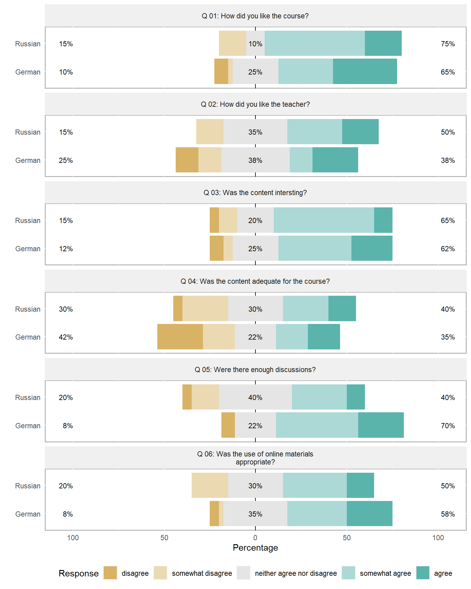
Comparative bar plots with negative values
Another frequent task is to evaluate the divergence of values from a reference, for instance when dealing with language learners where native speakers serve as a reference or target. To illustrate how such data can be visualized, we load the scales package as we want to create a bar plot in which we show the divergence of learners from native speakers regarding certain features and how that divergence changes over time. Then, we create an example data set which mirrors the format we expect for the actual data.
# create a vector with values called Test1
Test1 <- c(11.2, 13.5, 200, 185, 1.3, 3.5)
# create a vector with values called Test2
Test2 <- c(12.2, 14.7, 210, 175, 1.9, 3.0)
# create a vector with values called Test3
Test3 <- c(13.2, 15.1, 177, 173, 2.4, 2.9)
# combine vectors in a data frame
testdata <- data.frame(Test1, Test2, Test3)
# add rownames
rownames(testdata) <- c("Feature1_Student",
"Feature1_Reference",
"Feature2_Student",
"Feature2_Reference",
"Feature3_Student",
"Feature3_Reference")
# inspect data
testdata ## Test1 Test2 Test3
## Feature1_Student 11.2 12.2 13.2
## Feature1_Reference 13.5 14.7 15.1
## Feature2_Student 200.0 210.0 177.0
## Feature2_Reference 185.0 175.0 173.0
## Feature3_Student 1.3 1.9 2.4
## Feature3_Reference 3.5 3.0 2.9We can now determine how the learners deviate from the native speakers.
# determine divergence from reference
# row 1 (student) minus row 2 (reference)
FeatureA <- t(testdata[1,] - testdata[2,])
# row 3 (student) minus row 4 (reference)
FeatureB <- t(testdata[3,] - testdata[4,])
# row 5 (student) minus row 6 (reference)
FeatureC <- t(testdata[5,] - testdata[6,])
# create data frame
plottable <- data.frame(rep(rownames(FeatureA), 3),
c(FeatureA, FeatureB, FeatureC),
c(rep("FeatureA", 3),
rep("FeatureB", 3),
rep("FeatureC", 3)))
# def. col. names
colnames(plottable) <- c("Test", "Value", "Feature")
# inspect data
plottable ## Test Value Feature
## 1 Test1 -2.3 FeatureA
## 2 Test2 -2.5 FeatureA
## 3 Test3 -1.9 FeatureA
## 4 Test1 15.0 FeatureB
## 5 Test2 35.0 FeatureB
## 6 Test3 4.0 FeatureB
## 7 Test1 -2.2 FeatureC
## 8 Test2 -1.1 FeatureC
## 9 Test3 -0.5 FeatureCFinally, we graphically display the divergence using a bar plot.
# create plot
ggplot(plottable,
aes(Test, Value)) + # def. x/y-axes
# separate plots for each feature
facet_grid(vars(Feature), scales = "free_y") +
# create bars
geom_bar(stat = "identity", aes(fill = Test)) +
# black and white theme
theme_bw() +
# suppress legend
guides(fill=FALSE) +
# def. colours
geom_bar(stat="identity", fill=rep(clrs5[1:3], 3)) +
# axes titles
labs(x = "", y = "Score") 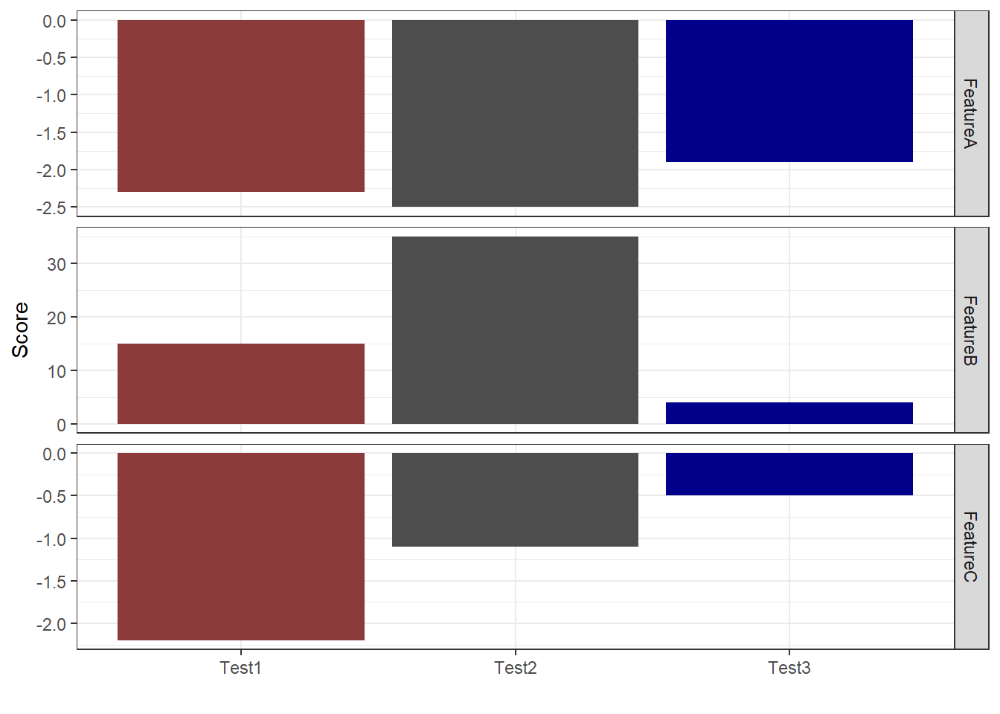
Ridge Plots
A very nice option to display frequency information about levels of a
categorical variable are ridge plots. To generate ridge plots, we can
use the ggridges package written by Claus Wilke.
# load package
library(ggridges)
# create ridge plot
pdat %>%
ggplot(aes(x = Prepositions, y = GenreRedux, fill = GenreRedux)) +
geom_density_ridges() +
theme_ridges() +
theme(legend.position = "none") +
labs(y = "", x = "Density of the relative frequency of prepostions")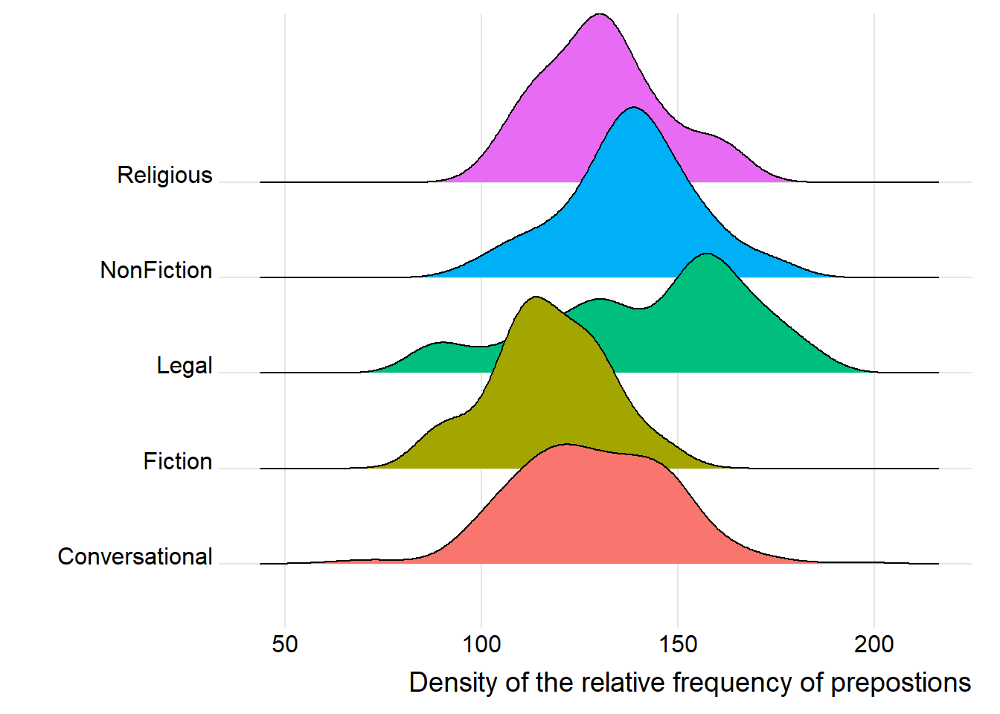
You can easily replace the density displays by histograms which only
requires to define the stat argument and the bin width.
# create ridge plot
pdat %>%
ggplot(aes(x = Prepositions, y = GenreRedux, fill = GenreRedux)) +
geom_density_ridges(alpha=0.6, stat="binline", bins=20) +
theme_ridges() +
theme(legend.position = "none") +
labs(y = "", x = "Histograms of the relative frequency of prepostions")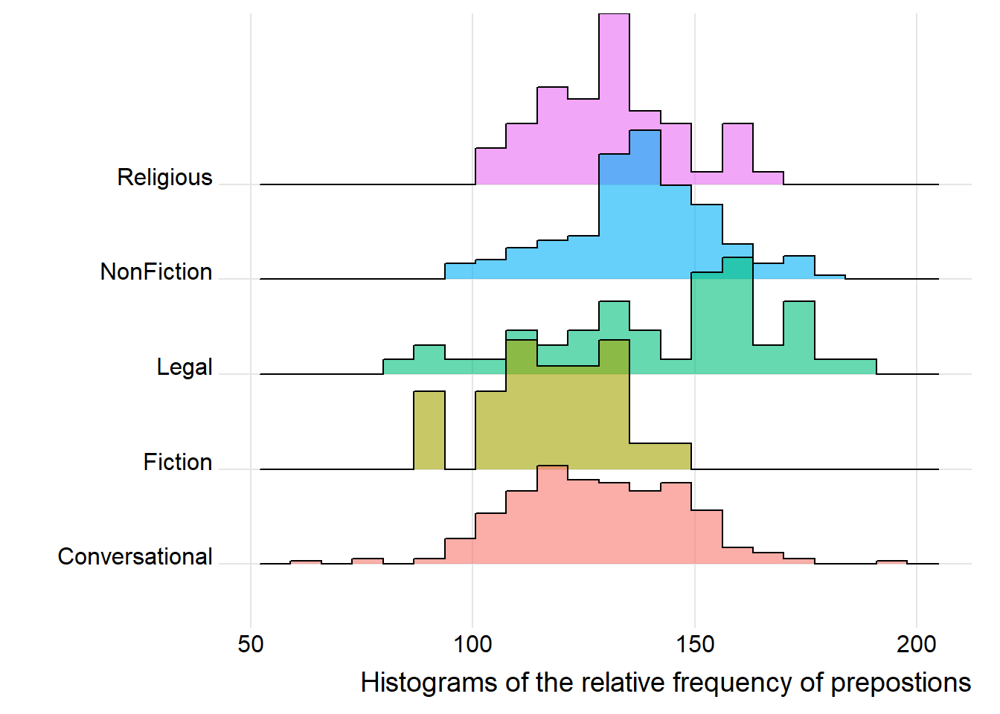
Boxplots
So far, we have plotted values but we have not plotted the underlying distributions. For instance, we have plotted mean values but not the variance within the distribution. One handy way to combine plotting general trends and their underlying distributions are boxplots.
Boxplots, or Box-and-Whisker Plots, are exploratory graphics first created by John W. Tukey and they show the relationships between categorical and numeric variables. They are very useful because they not only provide measures of central tendency (the median which is the line in the middle of the box) but they also offer information about the distribution of the data. To elaborate, fifty percent of data points fall within the box while seventy-five percent of data points fall within the whiskers (the lines which look like extended error bars): the box thus encompasses the interquartile range between the first and third quartile. The whiskers show the minimum and maximum values in the data and only outliers (data points that lie 1.5 times the interquartile range or more above the third quartile or 1.5 times the interquartile range or more below the first quartile. If the whiskers differ in length, then this means that the data is asymmetrically distributed.
# create boxplot
ggplot(pdat, aes(DateRedux, Prepositions, color = GenreRedux)) +
geom_boxplot(fill=clrs5,
color="black") 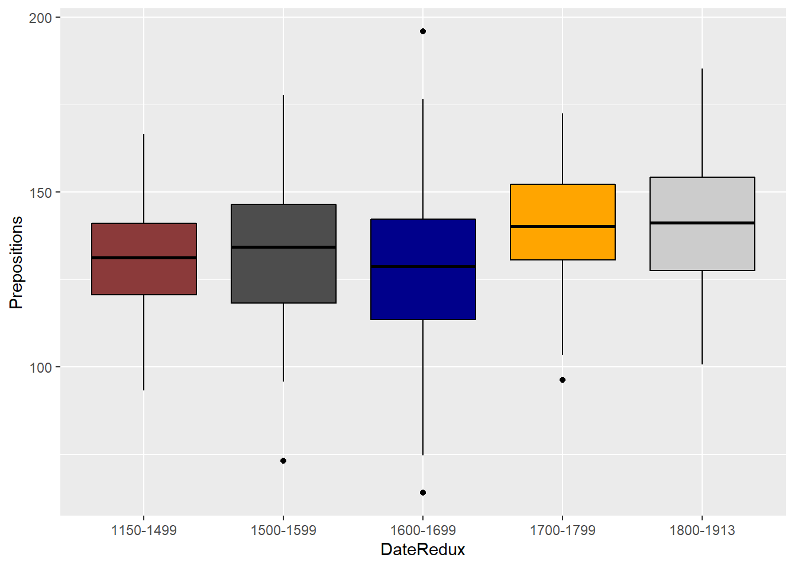
Another interesting feature of boxplots is that they allow us to visually get an idea whether categories differ significantly. Because if add “notch = T” and the notches of the boxplots do not overlap, then this is a very strong indication that the categories actually differ significantly (see below).
# create boxplot
ggplot(pdat, aes(DateRedux, Prepositions, color = GenreRedux)) +
geom_boxplot(outlier.colour="red",
outlier.shape=2,
outlier.size=5,
notch=T,
fill=clrs5,
color="black") 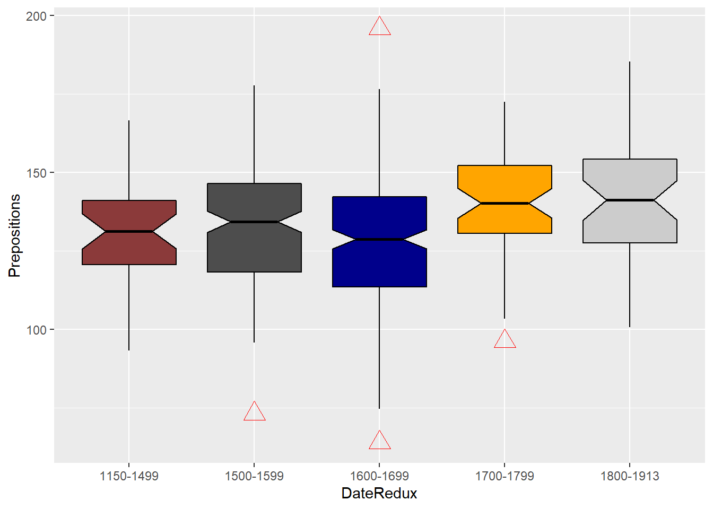
library(EnvStats)
# create boxplot
ggplot(pdat, aes(DateRedux, Prepositions, fill = DateRedux, color = DateRedux)) +
geom_boxplot(varwidth = T, color = "black", alpha = .2) +
geom_jitter(alpha = .2, height = 0, width = .2) +
facet_grid(~Region) +
EnvStats::stat_n_text(y.pos = 65) +
theme(legend.position = "none") +
labs(x = "", y = "Frequency (per 1,000 words)") +
ggtitle("Use of prepositions in English texts across time and regions")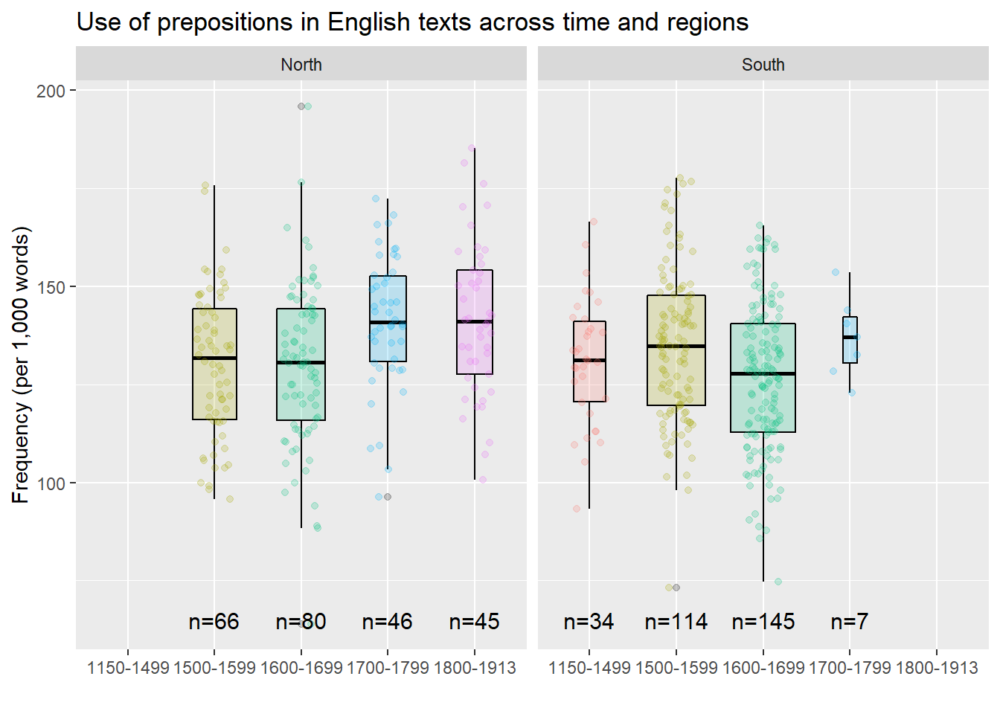
library(ggstatsplot)
# create boxplot
ggstatsplot::ggbetweenstats(data = pdat,
x = DateRedux,
y = Prepositions,
plottype = "box",
type = "p",
conf.level = 0.95)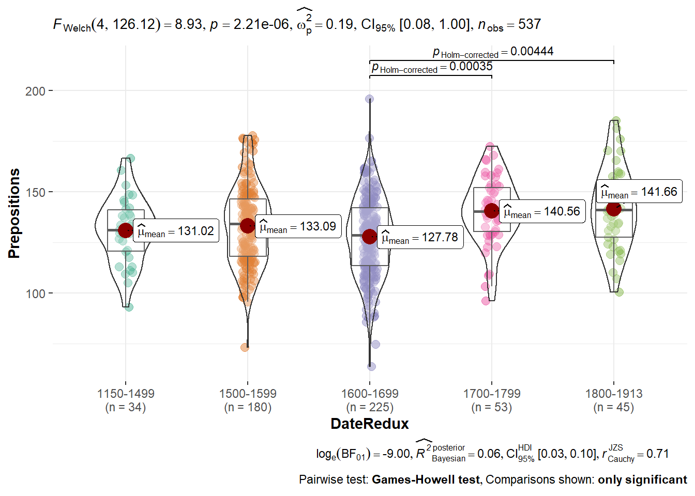
Violin plots
An alternative to boxplots which display the distribution within the data even more accurately are violin plots.
ggplot(pdat, aes(DateRedux, Prepositions, fill = DateRedux)) +
geom_violin(trim = FALSE, alpha = .5) +
scale_fill_manual(values = clrs5) +
theme_bw() +
theme(legend.position = "none") 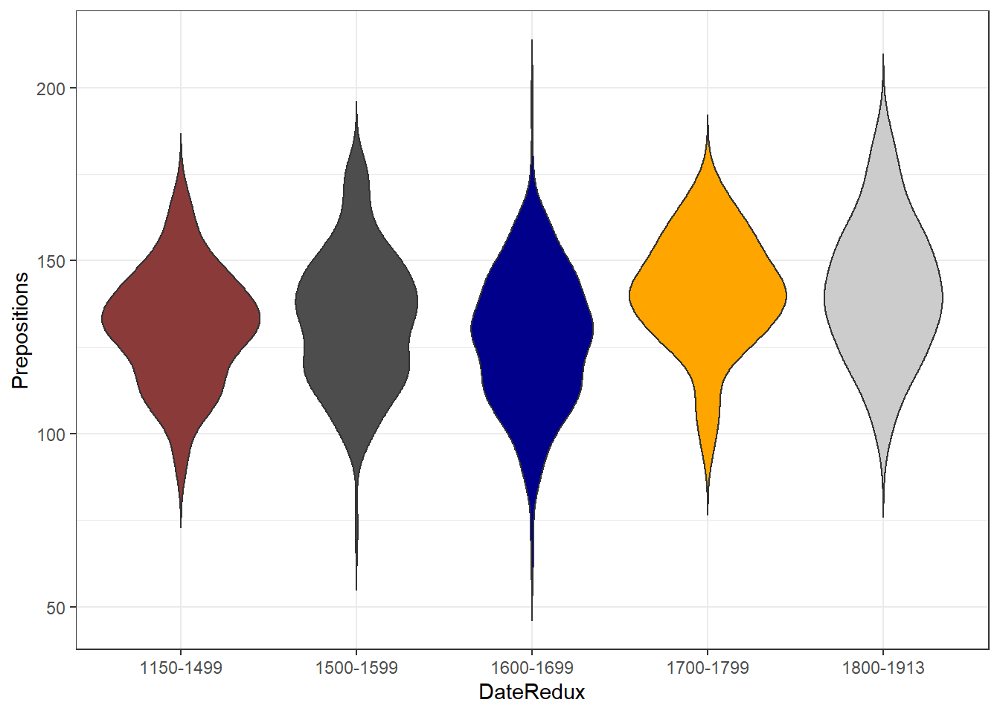
Word clouds
Word clouds visualize word frequencies of either single corpus or different corpora. Although word clouds are rarely used in academic publications, they are a common way to display language data and the topics of texts - which may be thought of as their semantic content. To exemplify how to use word clouds, we are going to have a look at rally speeches of Hillary Clinton and Donald Trump that were given during their 2016 campaigns. In a first step, we load and process the data as the relevant packages are already loaded.
# load and process speeches by clinton
clinton <- base::readRDS(url("https://slcladal.github.io/data/Clinton.rda", "rb")) %>% paste0(collapse = " ")
# load and process speeches by trump
trump <- base::readRDS(url("https://slcladal.github.io/data/Trump.rda", "rb")) %>% paste0(collapse = " ")After loading the data, we need to clean it.
# clean texts
docs <- Corpus(VectorSource(c(clinton, trump))) %>%
# clean text data
tm::tm_map(removePunctuation) %>%
tm::tm_map(removeNumbers) %>%
tm::tm_map(tolower) %>%
tm::tm_map(removeWords, stopwords("english")) %>%
tm::tm_map(stripWhitespace) %>%
tm::tm_map(PlainTextDocument)
# create term document matrix
tdm <- TermDocumentMatrix(docs) %>%
as.matrix()
colnames(tdm) <- c("Clinton","Trump")Next, we normalize the absolute frequencies of the terms in the document by converting them into relative frequencies.
# calculate rel. freq.
tdm[, 1] <- as.vector(unlist(sapply(tdm[, 1], function(x) round(x/colSums(tdm)[1]*1000, 0) )))
# calculate rel. freq.
tdm[, 2] <- as.vector(unlist(sapply(tdm[, 2], function(x) round(x/colSums(tdm)[2]*1000, 0) )))After processing the data, we can now create word clouds. However, there are different word clouds:
- (Common) word clouds
- Comparative clouds
- Commonality clouds
Common or simple word clouds simply show the frequency of word types while comparative word clouds show which word types are particularly overrepresented in one sub-corpus compared to another sub-corpus. Commonality word clouds show words that are shared and are thus particularly indistinctive for different sub-corpora.
Let us first inspect a common word cloud of the corpus.
# load package
library(wordcloud)
# create word cloud
wordcloud(docs, max.words = 100,
colors = brewer.pal(6, "BrBG"),
random.order = FALSE)The common word cloud shows the frequencies of words regardless of who used them. In contrast, the comparative cloud shown below highlights words that differ most with respect to their frequencies in the sub-corpora under investigation.
# create comparison cloud
comparison.cloud(tdm,
max.words = 100,
random.order = FALSE,
colors = c("blue", "red"),
title.bg.colors="white",
bg.color = "black")The opposite of comparative clouds are commonality clouds which highlight words that use with similar relative frequencies in the sub-corpora under investigation and that are therefore particularly indistinctive.
# create commonality cloud
commonality.cloud(tdm,
max.words = 100,
random.order = FALSE,
colors = brewer.pal(6, "Spectral"))At first, I thought that word clouds are simply a fancy but not very helpful way to inspect language data but I have to admit that word clouds really surprised me as they do appear to possess potential to provide an idea of what groups of people are talking about. The comparative word cloud shows that the Trump uses a lot of contractions (“’re”, “’ll”, etc.) and stresses concepts linked to the future (going) thereby stressing his vision of the US (great). In Contrast, Clinton did not use contractions but talked about Americans, work, the economy, and women.
Association plots
Another plot type that is related to bar plots is the association plot. Association plots are similar to bar plots in that they display difference as bars above or below a line (as shown above). However, association plots show the difference between the observed and expected frequencies rather than differences as deviations from a reference. Therefore, they are often used when graphically representing tables with absolute frequencies. We use the already loaded vcd package to create association plots.
We also modify the reduced pdat as association plots work on matrices rather than data frames or tibbles. In addition, we will drop more genres as to avoid overlap in the y-axis labels later on.
# reduce data
assocdata <- pdat %>%
droplevels() %>%
dplyr::mutate(GenreRedux <- as.character(GenreRedux),
GenreRedux = dplyr::case_when(GenreRedux == "Conversational" ~ "Conv.",
GenreRedux == "Religious" ~ "Relig.",
TRUE ~ GenreRedux)) %>%
dplyr::group_by(GenreRedux, DateRedux) %>%
dplyr::summarise(Prepositions = round(mean(Prepositions), 0)) %>%
tidyr::spread(DateRedux, Prepositions)
# create matrix
assocmx <- as.matrix(assocdata[,2:6])
attr(assocmx, "dimnames")[1] <- as.vector(assocdata[,1])Let’s briefly inspect the data set.
1150-1499 | 1500-1599 | 1600-1699 | 1700-1799 | 1800-1913 |
133 | 124 | 132 | 128 | |
93 | 113 | 112 | 128 | 134 |
149 | 129 | 150 | 164 | |
131 | 135 | 137 | 146 | 146 |
135 | 121 | 132 | 140 | 138 |
Association plots are created by using the assoc
function which takes a table (or a similar format such as a matrix or a
data frame) as their argument. In addition, we specify
shade as T in order to color code the bars in
the association plot and to add a legend.
# create association plot
assoc(assocmx, shade=TRUE)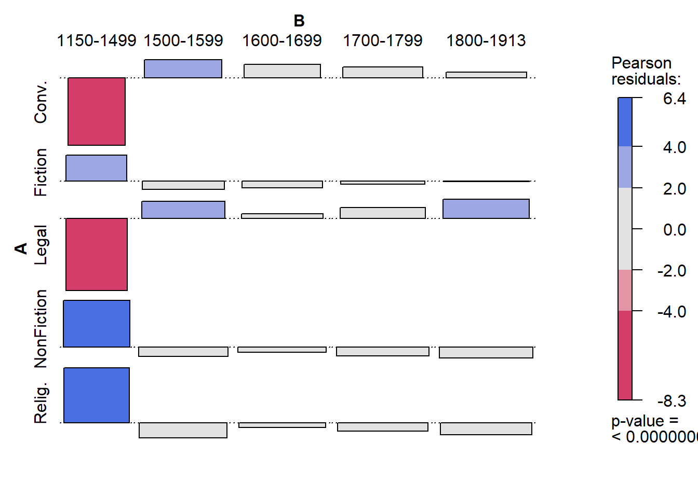
The bars above the line indicate that the observed frequency is higher than expected, bars under the line indicate frequencies that are lower than expected. Darker shades of blue and red coloring suggest that there are significant differences between the observed and the expected frequencies. In the present example, this means that the frequencies of prepositions differ significantly across genres and periods. However(!) as shown in the table above, this result is an artifact because the first period does not contain any data points for conversational or legal texts!
Mosaic plots
Another plot which is useful to graphically depict the relationship of categorical variables is the mosaic plot. The size of the boxes in a mosaic plot indicate how frequent that subcategory is and the colors show whether or not the category differs from the value that is expected if given the overall distribution in the table. In addition, the hue of the color shows how great the difference between observed and expected is and thus indicates whether the respective subcategory deviates significantly from the expected frequency. Boxes that are gray suggest the absence of significant differences.
# create a mosaic plot
mosaic(assocmx, shade=T, legend=TRUE) 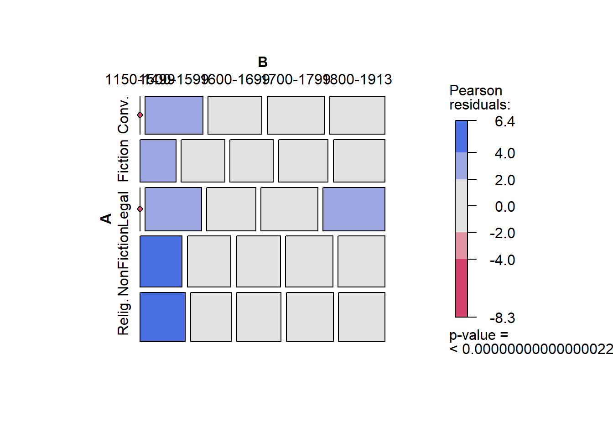
According to the mosaic plot above, there are some potentially significant differences in the first and second period. This, however, is still likely to be caused by the absence of data points from conversational or legal texts in the first period. Also, the absence of boxes for these text types in the first period indicate that there is a potential problem - something that was not visible in the mosaic plot!
Heat maps
Heat maps are similar to mosaic plots in that they display frequency information and use color-coding to indicate high and low values. Heat maps also work on matrices but they are much more powerful and versatile that mosaic plots.
Heat maps are a very popular way to display frequency information and various packages have been written to create or customize heatmaps (for example the packages “ComplexHeatmap”, “dendextend”, “d3heatmap”, “pheatmap”) which means that many aspects of heatmaps can be modified. In this example, we will only use the most basic function to create a heat map.
We again modify the data and create a matrix from the original pdat. In addition, we scale the frequencies. This is not necessary in the present case but when dealing with variables which differ in their mean and variance because they reflect different variables, scaling will normalize such variables and render their values comparable.
# create data
heatdata <- pdat %>%
dplyr::group_by(DateRedux, GenreRedux) %>%
dplyr::summarise(Prepositions = mean(Prepositions)) %>%
tidyr::spread(DateRedux, Prepositions)
# create matrix
heatmx <- as.matrix(heatdata[,2:5])
attr(heatmx, "dimnames")[1] <- as.vector(heatdata[,1])
heatmx <- scale(heatmx) %>%
round(., 2)Let’s briefly inspect the data set.
1150-1499 | 1500-1599 | 1600-1699 | 1700-1799 |
0.23 | -0.33 | -0.74 | |
-1.15 | -1.26 | -1.54 | -1.24 |
1.34 | 0.26 | 1.17 | |
0.47 | 0.34 | 1.08 | 0.73 |
0.67 | -0.65 | 0.52 | 0.08 |
Now that we have created a data matrix, we can create a simple heat map.
# create heat map
heatmap(heatmx, scale = "none", cexCol = 1, cexRow = 1)
The dendrogram on the top shows that documents from 1600 and 1700 as well as documents from 1800 and 1900 are grouped together and thus are more similar with respect to their preposition frequencies. The dendrogram on the left indicates that we have two categories of documents: the genres to towards the bottom tend to have fewer prepositions (indicated by the light colours) while the documents to the top tend to have more prepositions (thus the darker hues). Legal texts (genre = Law) have notably higher rates of prepositions as is derivable from the dark red colour of such texts.
Citation & Session Info
Schweinberger, Martin. 2022. Data Visualization with R. Brisbane: The University of Queensland. url: https://slcladal.github.io/dviz.html (Version 2022.05.21).
@manual{schweinberger2022dviz,
author = {Schweinberger, Martin},
title = {Data Visualization with R},
note = {https://slcladal.github.io/dviz.html},
year = {2022},
organization = {The University of Queensland, School of Languages and Cultures},
address = {Brisbane},
edition = {2022.05.21}
}sessionInfo()## R version 4.2.0 (2022-04-22 ucrt)
## Platform: x86_64-w64-mingw32/x64 (64-bit)
## Running under: Windows 10 x64 (build 19043)
##
## Matrix products: default
##
## locale:
## [1] LC_COLLATE=German_Germany.utf8 LC_CTYPE=German_Germany.utf8
## [3] LC_MONETARY=German_Germany.utf8 LC_NUMERIC=C
## [5] LC_TIME=German_Germany.utf8
##
## attached base packages:
## [1] grid stats graphics grDevices datasets utils methods
## [8] base
##
## other attached packages:
## [1] ggstatsplot_0.9.1 EnvStats_2.7.0 PMCMRplus_1.9.4 rstantools_2.2.0
## [5] hexbin_1.28.2 flextable_0.7.0 wordcloud_2.6 RColorBrewer_1.1-3
## [9] DT_0.22 knitr_1.39 tidyr_1.2.0 ggridges_0.5.3
## [13] tm_0.7-8 NLP_0.2-1 vcd_1.4-9 likert_1.3.5
## [17] xtable_1.8-4 ggplot2_3.3.6 stringr_1.4.0 dplyr_1.0.9
## [21] lattice_0.20-45
##
## loaded via a namespace (and not attached):
## [1] uuid_1.1-0 backports_1.4.1 Hmisc_4.7-0
## [4] systemfonts_1.0.4 plyr_1.8.7 splines_4.2.0
## [7] gmp_0.6-5 kSamples_1.2-9 TH.data_1.1-1
## [10] digest_0.6.29 SuppDists_1.1-9.7 htmltools_0.5.2
## [13] fansi_1.0.3 magrittr_2.0.3 checkmate_2.1.0
## [16] memoise_2.0.1 paletteer_1.4.0 cluster_2.1.3
## [19] officer_0.4.2 sandwich_3.0-1 jpeg_0.1-9
## [22] colorspace_2.0-3 ggrepel_0.9.1 xfun_0.30
## [25] prismatic_1.1.0 crayon_1.5.1 jsonlite_1.8.0
## [28] zeallot_0.1.0 survival_3.3-1 zoo_1.8-10
## [31] glue_1.6.2 gtable_0.3.0 emmeans_1.7.3
## [34] MatrixModels_0.5-0 statsExpressions_1.3.1 Rmpfr_0.8-7
## [37] scales_1.2.0 mvtnorm_1.1-3 DBI_1.1.2
## [40] Rcpp_1.0.8.3 isoband_0.2.5 performance_0.9.0
## [43] viridisLite_0.4.0 htmlTable_2.4.0 tmvnsim_1.0-2
## [46] klippy_0.0.0.9500 foreign_0.8-82 Formula_1.2-4
## [49] datawizard_0.4.0 htmlwidgets_1.5.4 ellipsis_0.3.2
## [52] pkgconfig_2.0.3 reshape_0.8.9 farver_2.1.0
## [55] nnet_7.3-17 multcompView_0.1-8 sass_0.4.1
## [58] utf8_1.2.2 effectsize_0.6.0.1 tidyselect_1.1.2
## [61] labeling_0.4.2 rlang_1.0.2 reshape2_1.4.4
## [64] munsell_0.5.0 tools_4.2.0 cachem_1.0.6
## [67] cli_3.3.0 generics_0.1.2 evaluate_0.15
## [70] fastmap_1.1.0 BWStest_0.2.2 yaml_2.3.5
## [73] rematch2_2.1.2 zip_2.2.0 purrr_0.3.4
## [76] pbapply_1.5-0 WRS2_1.1-3 nlme_3.1-157
## [79] slam_0.1-50 xml2_1.3.3 correlation_0.8.0
## [82] compiler_4.2.0 rstudioapi_0.13 png_0.1-7
## [85] ggsignif_0.6.3 tibble_3.1.7 bslib_0.3.1
## [88] stringi_1.7.6 highr_0.9 parameters_0.17.0
## [91] gdtools_0.2.4 Matrix_1.4-1 psych_2.2.3
## [94] vctrs_0.4.1 pillar_1.7.0 lifecycle_1.0.1
## [97] mc2d_0.1-21 lmtest_0.9-40 jquerylib_0.1.4
## [100] estimability_1.3 data.table_1.14.2 insight_0.17.0
## [103] patchwork_1.1.1 R6_2.5.1 latticeExtra_0.6-29
## [106] renv_0.15.4 gridExtra_2.3 BayesFactor_0.9.12-4.3
## [109] codetools_0.2-18 boot_1.3-28 gtools_3.9.2
## [112] MASS_7.3-56 assertthat_0.2.1 withr_2.5.0
## [115] mnormt_2.0.2 multcomp_1.4-19 mgcv_1.8-40
## [118] bayestestR_0.12.1 parallel_4.2.0 rpart_4.1.16
## [121] coda_0.19-4 rmarkdown_2.14 base64enc_0.1-3